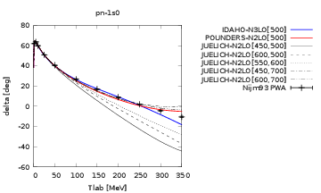

Figure 1: Examples of negative and positive phase shifts for repulsive and attractive potentials, respectively.

In order to understand the basics of the nucleon-nucleon interaction, we need to define the relevant quantum numbers and how we build up a single-particle state and a two-body state.
We have that the operators for the orbital momentum are given by $$ L_x=-i\hbar(y\frac{\partial }{\partial z}-z\frac{\partial }{\partial y})= yp_z-zp_y, $$ $$ L_y=-i\hbar(z\frac{\partial }{\partial x}-x\frac{\partial }{\partial z})= zp_x-xp_z, $$ $$ L_z=-i\hbar(x\frac{\partial }{\partial y}-y\frac{\partial }{\partial x})=xp_y-yp_x. $$
Since we have a spin orbit force which is strong, it is easy to show that the total angular momentum operator $$ \hat{J}=\hat{L}+\hat{S} $$ does not commute with \( \hat{L}_z \) and \( \hat{S}_z \). To see this, we calculate for example $$ \begin{eqnarray} [\hat{L}_z,\hat{J}^2]&=&[\hat{L}_z,(\hat{L}+\hat{S})^2] \\ \nonumber &=&[\hat{L}_z,\hat{L}^2+\hat{S}^2+2\hat{L}\hat{S}]\\ \nonumber &=& [\hat{L}_z,\hat{L}\hat{S}]=[\hat{L}_z,\hat{L}_x\hat{S}_x+\hat{L}_y\hat{S}_y+\hat{L}_z\hat{S}_z]\ne 0, \end{eqnarray} $$ since we have that \( [\hat{L}_z,\hat{L}_x]=i\hbar\hat{L}_y \) and \( [\hat{L}_z,\hat{L}_y]=i\hbar\hat{L}_x \).
We have also $$ |\hat{J}|=\hbar\sqrt{J(J+1)}, $$ with the the following degeneracy $$ M_J=-J, -J+1, \dots, J-1, J. $$ With a given value of \( L \) and \( S \) we can then determine the possible values of \( J \) by studying the \( z \) component of \( \hat{J} \). It is given by $$ \hat{J}_z=\hat{L}_z+\hat{S}_z. $$ The operators \( \hat{L}_z \) and \( \hat{S}_z \) have the quantum numbers \( L_z=M_L\hbar \) and \( S_z=M_S\hbar \), respectively, meaning that $$ M_J\hbar=M_L\hbar +M_S\hbar, $$ or $$ M_J=M_L +M_S. $$ Since the max value of \( M_L \) is \( L \) and for \( M_S \) is \( S \) we obtain $$ (M_J)_{\mathrm{maks}}=L+S. $$
For nucleons we have that the maximum value of \( M_S=m_s=1/2 \), yielding $$ (m_j)_{\mathrm{max}}=l+\frac{1}{2}. $$ Using this and the fact that the maximum value of \( M_J=m_j \) is \( j \) we have $$ j=l+\frac{1}{2}, l-\frac{1}{2}, l-\frac{3}{2}, l-\frac{5}{2}, \dots $$ To decide where this series terminates, we use the vector inequality $$ |\hat{L}+\hat{S}| \ge \left| |\hat{L}|-|\hat{S}|\right|. $$
Using \( \hat{J}=\hat{L}+\hat{S} \) we get $$ |\hat{J}| \ge |\hat{L}|-|\hat{S}|, $$ or $$ |\hat{J}|=\hbar\sqrt{J(J+1)}\ge |\hbar\sqrt{L(L+1)}- \hbar\sqrt{S(S+1)}|. $$
If we limit ourselves to nucleons only with \( s=1/2 \) we find that $$ |\hat{J}|=\hbar\sqrt{j(j+1)}\ge |\hbar\sqrt{l(l+1)}- \hbar\sqrt{\frac{1}{2}(\frac{1}{2}+1)}|. $$ It is then easy to show that for nucleons there are only two possible values of \( j \) which satisfy the inequality, namely $$ j=l+\frac{1}{2}\hspace{0.1cm} \mathrm{or} \hspace{0.1cm}j=l-\frac{1}{2}, $$ and with \( l=0 \) we get $$ j=\frac{1}{2}. $$
Let us study some selected examples. We need also to keep in mind that parity is conserved. The strong and electromagnetic Hamiltonians conserve parity. Thus the eigenstates can be broken down into two classes of states labeled by their parity \( \pi= +1 \) or \( \pi=-1 \). The nuclear interactions do not mix states with different parity.
For nuclear structure the total parity originates from the intrinsic parity of the nucleon which is \( \pi_{\mathrm{intrinsic}}=+1 \) and the parities associated with the orbital angular momenta \( \pi_l=(-1)^l \) . The total parity is the product over all nucleons \( \pi = \prod_i \pi_{\mathrm{intrinsic}}(i)\pi_l(i) = \prod_i (-1)^{l_i} \)
The basis states we deal with are constructed so that they conserve parity and have thus a definite parity.
Note that we do have parity violating processes, more on this later although our focus will be mainly on non-parity viloating processes
Consider now the single-particle orbits of the \( 1s0d \) shell. For a \( 0d \) state we have the quantum numbers \( l=2 \), \( m_l=-2,-1,0,1,2 \), \( s+1/2 \), \( m_s=\pm 1/2 \), \( n=0 \) (the number of nodes of the wave function). This means that we have positive parity and $$ j=\frac{3}{2}=l-s\hspace{1cm} m_j=-\frac{3}{2},-\frac{1}{2},\frac{1}{2},\frac{3}{2}. $$ and $$ j=\frac{5}{2}=l+s\hspace{1cm} m_j=-\frac{5}{2},-\frac{3}{2},-\frac{1}{2},\frac{1}{2},\frac{3}{2},\frac{5}{2}. $$
Our single-particle wave functions, if we use the harmonic oscillator, do however not contain the quantum numbers \( j \) and \( m_j \). Normally what we have is an eigenfunction for the one-body problem defined as $$ \phi_{nlm_lsm_s}(r,\theta,\phi)=R_{nl}(r)Y_{lm_l}(\theta,\phi)\xi_{sm_s}, $$ where we have used spherical coordinates (with a spherically symmetric potential) and the spherical harmonics $$ Y_{lm_l}(\theta,\phi)=P(\theta)F(\phi)=\sqrt{\frac{(2l+1)(l-m_l)!}{4\pi (l+m_l)!}} P_l^{m_l}(cos(\theta))\exp{(im_l\phi)}, $$ with \( P_l^{m_l} \) being the so-called associated Legendre polynomials.
Examples are $$ Y_{00}=\sqrt{\frac{1}{4\pi}}, $$ for \( l=m_l=0 \), $$ Y_{10}=\sqrt{\frac{3}{4\pi}}cos(\theta), $$ for \( l=1 \) and \( m_l=0 \), $$ Y_{1\pm 1}=\sqrt{\frac{3}{8\pi}}sin(\theta)exp(\pm i\phi), $$ for \( l=1 \) and \( m_l=\pm 1 \), $$ Y_{20}=\sqrt{\frac{5}{16\pi}}(3cos^2(\theta)-1) $$ for \( l=2 \) and \( m_l=0 \) etc.
How can we get a function in terms of \( j \) and \( m_j \)? Define now $$ \phi_{nlm_lsm_s}(r,\theta,\phi)=R_{nl}(r)Y_{lm_l}(\theta,\phi)\xi_{sm_s}, $$ and $$ \psi_{njm_j;lm_lsm_s}(r,\theta,\phi), $$ as the state with quantum numbers \( jm_j \). Operating with $$ \hat{j}^2=(\hat{l}+\hat{s})^2=\hat{l}^2+\hat{s}^2+2\hat{l}_z\hat{s}_z+\hat{l}_+\hat{s}_{-}+\hat{l}_{-}\hat{s}_{+}, $$ on the latter state we will obtain admixtures from possible \( \phi_{nlm_lsm_s}(r,\theta,\phi) \) states.
To see this, we consider the following example and fix $$ j=\frac{3}{2}=l-s\hspace{1cm} m_j=\frac{3}{2}. $$ and $$ j=\frac{5}{2}=l+s\hspace{1cm} m_j=\frac{3}{2}. $$ It means we can have, with \( l=2 \) and \( s=1/2 \) being fixed, in order to have \( m_j=3/2 \) either \( m_l=1 \) and \( m_s=1/2 \) or \( m_l=2 \) and \( m_s=-1/2 \). The two states $$ \psi_{n=0j=5/2m_j=3/2;l=2s=1/2} $$ and $$ \psi_{n=0j=3/2m_j=3/2;l=2s=1/2} $$ will have admixtures from \( \phi_{n=0l=2m_l=2s=1/2m_s=-1/2} \) and \( \phi_{n=0l=2m_l=1s=1/2m_s=1/2} \). How do we find these admixtures? Note that we don't specify the values of \( m_l \) and \( m_s \) in the functions \( \psi \) since \( \hat{j}^2 \) does not commute with \( \hat{L}_z \) and \( \hat{S}_z \).
We operate with $$ \hat{j}^2=(\hat{l}+\hat{s})^2=\hat{l}^2+\hat{s}^2+2\hat{l}_z\hat{s}_z+\hat{l}_+\hat{s}_{-}+\hat{l}_{-}\hat{s}_{+} $$ on the two \( jm_j \) states, that is $$ \hat{j}^2\psi_{n=0j=5/2m_j=3/2;l=2s=1/2}= \alpha\hbar^2[l(l+1)+\frac{3}{4}+2m_lm_s]\phi_{n=0l=2m_l=2s=1/2m_s=-1/2}+ $$ $$ \beta\hbar^2\sqrt{l(l+1)-m_l(m_l-1)}\phi_{n=0l=2m_l=1s=1/2m_s=1/2}, $$ and $$ \hat{j}^2\psi_{n=0j=3/2m_j=3/2;l=2s=1/2}= \alpha\hbar^2[l(l+1)+\frac{3}{4}+2m_lm_s]+ \phi_{n=0l=2m_l=1s=1/2m_s=1/2}+ $$ $$ \beta\hbar^2\sqrt{l(l+1)-m_l(m_l+1)}\phi_{n=0l=2m_l=2s=1/2m_s=-1/2}. $$
This means that the eigenvectors \( \phi_{n=0l=2m_l=2s=1/2m_s=-1/2} \) etc are not eigenvectors of \( \hat{j}^2 \). The above problems gives a \( 2\times2 \) matrix that mixes the vectors \( \psi_{n=0j=5/2m_j3/2;l=2m_ls=1/2m_s} \) and \( \psi_{n=0j=3/2m_j3/2;l=2m_ls=1/2m_s} \) with the states \( \phi_{n=0l=2m_l=2s=1/2m_s=-1/2} \) and \( \phi_{n=0l=2m_l=1s=1/2m_s=1/2} \). The unknown coefficients \( \alpha \) and \( \beta \) results from eigenvectors of this matrix. That is, inserting all values \( m_l,l,m_s,s \) we obtain the matrix $$ \left[ \begin{array} {cc} 19/4 & 2 \\ 2 & 31/4 \end{array} \right]$$ whose eigenvectors are the columns of $$ \left[ \begin{array} {cc} 2/\sqrt{5} &1/\sqrt{5} \\ 1/\sqrt{5} & -2/\sqrt{5} \end{array}\right]$$ These numbers define the so-called Clebsch-Gordan coupling coefficients (the overlaps between the two basis sets). We can thus write $$ \psi_{njm_j;ls}=\sum_{m_lm_s}\langle lm_lsm_s|jm_j\rangle\phi_{nlm_lsm_s}, $$ where the coefficients \( \langle lm_lsm_s|jm_j\rangle \) are the so-called Clebsch-Gordan coeffficients.
The Clebsch-Gordan coeffficients \( \langle lm_lsm_s|jm_j\rangle \) have some interesting properties for us, like the following orthogonality relations $$ \sum_{m_1m_2}\langle j_1m_1j_2m_2|JM\rangle\langle j_1m_1j_2m_2|J'M'\rangle=\delta_{J,J'}\delta_{M,M'}, $$ $$ \sum_{JM}\langle j_1m_1j_2m_2|JM\rangle\langle j_1m_1'j_2m_2'|JM\rangle=\delta_{m_1,m_1'}\delta_{m_2,m_2'}, $$ $$ \langle j_1m_1j_2m_2|JM\rangle=(-1)^{j_1+j_2-J}\langle j_2m_2j_1m_1|JM\rangle, $$ and many others. The latter will turn extremely useful when we are going to define two-body states and interactions in a coupled basis.
Summing up, for for the single-particle case, we have the following eigenfunctions $$ \psi_{njm_j;ls}=\sum_{m_lm_s}\langle lm_lsm_s|jm_j\rangle\phi_{nlm_lsm_s}, $$ where the coefficients \( \langle lm_lsm_s|jm_j\rangle \) are the so-called Clebsch-Gordan coeffficients. The relevant quantum numbers are \( n \) (related to the principal quantum number and the number of nodes of the wave function) and $$ \hat{j}^2\psi_{njm_j;ls}=\hbar^2j(j+1)\psi_{njm_j;ls}, $$ $$ \hat{j}_z\psi_{njm_j;ls}=\hbar m_j\psi_{njm_j;ls}, $$ $$ \hat{l}^2\psi_{njm_j;ls}=\hbar^2l(l+1)\psi_{njm_j;ls}, $$ $$ \hat{s}^2\psi_{njm_j;ls}=\hbar^2s(s+1)\psi_{njm_j;ls}, $$ but \( s_z \) and \( l_z \) do not result in good quantum numbers in a basis where we use the angular momentum \( j \).
For a two-body state where we couple two angular momenta \( j_1 \) and \( j_2 \) to a final angular momentum \( J \) with projection \( M_J \), we can define a similar transformation in terms of the Clebsch-Gordan coeffficients $$ \psi_{(j_1j_2)JM_J}=\sum_{m_{j_1}m_{j_2}}\langle j_1m_{j_1}j_2m_{j_2}|JM_J\rangle\psi_{n_1j_1m_{j_1};l_1s_1}\psi_{n_2j_2m_{j_2};l_2s_2}. $$ We will write these functions in a more compact form hereafter, namely, $$ |(j_1j_2)JM_J\rangle=\psi_{(j_1j_2)JM_J}, $$ and $$ |j_im_{j_i}\rangle=\psi_{n_ij_im_{j_i};l_is_i}, $$ where we have skipped the explicit reference to \( l \), \( s \) and \( n \). The spin of a nucleon is always \( 1/2 \) while the value of \( l \) can be deduced from the parity of the state. It is thus normal to label a state with a given total angular momentum as \( j^{\pi} \), where \( \pi=\pm 1 \).
Our two-body state can thus be written as $$ |(j_1j_2)JM_J\rangle=\sum_{m_{j_1}m_{j_2}}\langle j_1m_{j_1}j_2m_{j_2}|JM_J\rangle|j_1m_{j_1}\rangle|j_2m_{j_2}\rangle. $$ Due to the coupling order of the Clebsch-Gordan coefficient it reads as \( j_1 \) coupled to \( j_2 \) to yield a final angular momentum \( J \). If we invert the order of coupling we would have $$ |(j_2j_1)JM_J\rangle=\sum_{m_{j_1}m_{j_2}}\langle j_2m_{j_2}j_1m_{j_1}|JM_J\rangle|j_1m_{j_1}\rangle|j_2m_{j_2}\rangle, $$ and due to the symmetry properties of the Clebsch-Gordan coefficient we have $$ |(j_2j_1)JM_J\rangle=(-1)^{j_1+j_2-J}\sum_{m_{j_1}m_{j_2}}\langle j_1m_{j_1}j_2m_{j_2}|JM_J\rangle|j_1m_{j_1}\rangle|j_2m_{j_2}\rangle=(-1)^{j_1+j_2-J}|(j_1j_2)JM_J\rangle. $$ We call the basis \( |(j_1j_2)JM_J\rangle \) for the coupled basis, or just \( j \)-coupled basis/scheme. The basis formed by the simple product of single-particle eigenstates \( |j_1m_{j_1}\rangle|j_2m_{j_2}\rangle \) is called the uncoupled-basis, or just the \( m \)-scheme basis.
We have thus the coupled basis $$ |(j_1j_2)JM_J\rangle=\sum_{m_{j_1}m_{j_2}}\langle j_1m_{j_1}j_2m_{j_2}|JM_J\rangle|j_1m_{j_1}\rangle|j_2m_{j_2}\rangle. $$ and the uncoupled basis $$ |j_1m_{j_1}\rangle|j_2m_{j_2}\rangle. $$ The latter can easily be generalized to many single-particle states whereas the first needs specific coupling coefficients and definitions of coupling orders. The \( m \)-scheme basis is easy to implement numerically and is used in most standard shell-model codes. Our coupled basis obeys also the following relations $$ \hat{J}^2|(j_1j_2)JM_J\rangle=\hbar^2J(J+1)|(j_1j_2)JM_J\rangle $$ $$ \hat{J}_z|(j_1j_2)JM_J\rangle=\hbar M_J|(j_1j_2)JM_J\rangle, $$
The nuclear forces are almost charge independent. If we assume they are, we can introduce a new quantum number which is conserved. For nucleons only, that is a proton and neutron, we can limit ourselves to two possible values which allow us to distinguish between the two particles. If we assign an isospin value of \( \tau=1/2 \) for protons and neutrons (they belong to an isospin doublet, in the same way as we discussed the spin \( 1/2 \) multiplet), we can define the neutron to have isospin projection \( \tau_z=+1/2 \) and a proton to have \( \tau_z=-1/2 \). These assignements are the standard choices in low-energy nuclear physics.
This leads to the introduction of an additional quantum number called isospin. We can define a single-nucleon state function in terms of the quantum numbers \( n \), \( j \), \( m_j \), \( l \), \( s \), \( \tau \) and \( \tau_z \). Using our definitions in terms of an uncoupled basis, we had $$ \psi_{njm_j;ls}=\sum_{m_lm_s}\langle lm_lsm_s|jm_j\rangle\phi_{nlm_lsm_s}, $$ which we can now extend to $$ \psi_{njm_j;ls}\xi_{\tau\tau_z}=\sum_{m_lm_s}\langle lm_lsm_s|jm_j\rangle\phi_{nlm_lsm_s}\xi_{\tau\tau_z}, $$ with the isospin spinors defined as $$ \xi_{\tau=1/2\tau_z=+1/2}=\left(\begin{array}{c} 1 \\ 0\end{array}\right), $$ and $$ \xi_{\tau=1/2\tau_z=-1/2}=\left(\begin{array}{c} 0 \\ 1\end{array}\right). $$ We can then define the proton state function as $$ \psi^p(\mathbf{r}) =\psi_{njm_j;ls}(\mathbf{r})\left(\begin{array}{c} 0 \\ 1\end{array}\right), $$ and similarly for neutrons as $$ \psi^n(\mathbf{r}) =\psi_{njm_j;ls}(\mathbf{r})\left(\begin{array}{c} 1 \\ 0\end{array}\right). $$
We can in turn define the isospin Pauli matrices (in the same as we define the spin matrices) as $$ \hat{\tau}_x =\left(\begin{array}{cc} 0 & 1 \\ 1 & 0 \end{array}\right), $$ $$ \hat{\tau}_y =\left(\begin{array}{cc} 0 & -\imath \\ \imath & 0 \end{array}\right), $$ and $$ \hat{\tau}_z =\left(\begin{array}{cc} 1 & 0 \\ 0 & -1 \end{array}\right), $$ and operating with \( \hat{\tau}_z \) on the proton state function we have $$ \hat{\tau}_z\psi^p(\mathbf{r})=-\frac{1}{2}\psi^p(\mathbf{r}), $$ and for neutrons we have $$ \hat{\tau}\psi^n(\mathbf{r})=\frac{1}{2}\psi^n(\mathbf{r}). $$
We can now define the so-called charge operator as $$ \frac{\hat{Q}}{e} = \frac{1}{2}\left(1-\hat{\tau}_z\right)=\begin{Bmatrix} 0 & 0 \\ 0 & 1 \end{Bmatrix}, $$ which results in $$ \frac{\hat{Q}}{e}\psi^p(\mathbf{r})=\psi^p(\mathbf{r}), $$ and $$ \frac{\hat{Q}}{e}\psi^n(\mathbf{r})=0, $$ as it should be.
The total isospin is defined as $$ \hat{T}=\sum_{i=1}^A\hat{\tau}_i, $$ and its corresponding isospin projection as $$ \hat{T}_z=\sum_{i=1}^A\hat{\tau}_{z_i}, $$ with eigenvalues \( T(T+1) \) for \( \hat{T} \) and \( 1/2(N-Z) \) for \( \hat{T}_z \), where \( N \) is the number of neutrons and \( Z \) the number of protons.
If charge is conserved, the Hamiltonian \( \hat{H} \) commutes with \( \hat{T}_z \) and all members of a given isospin multiplet (that is the same value of \( T \)) have the same energy and there is no \( T_z \) dependence and we say that \( \hat{H} \) is a scalar in isospin space.
Till now we have not said anything about the explicit calculation of two-body matrix elements. It is time to amend this deficiency. We have till now seen the following definitions of a two-body matrix elements. In \( m \)-scheme with quantum numbers \( p=j_pm_p \) etc we have a two-body state defined as $$ |(pq)M\rangle = a^{\dagger}_pa^{\dagger}_q|\Phi_0\rangle, $$ where \( |\Phi_0\rangle \) is a chosen reference state, say for example the Slater determinant which approximates \( {}^{16}\mbox{O} \) with the \( 0s \) and the \( 0p \) shells being filled, and \( M=m_p+m_q \). Recall that we label single-particle states above the Fermi level as \( abcd\dots \) and states below the Fermi level for \( ijkl\dots \). In case of two-particles in the single-particle states \( a \) and \( b \) outside \( {}^{16}\mbox{O} \) as a closed shell core, say \( {}^{18}\mbox{O} \), we would write the representation of the Slater determinant as $$ |^{18}\mathrm{O}\rangle =|(ab)M\rangle = a^{\dagger}_aa^{\dagger}_b|^{16}\mathrm{O}\rangle=|\Phi^{ab}\rangle. $$ In case of two-particles removed from say \( {}^{16}\mbox{O} \), for example two neutrons in the single-particle states \( i \) and \( j \), we would write this as $$ |^{14}\mathrm{O}\rangle =|(ij)M\rangle = a_ja_i|^{16}\mathrm{O}\rangle=|\Phi_{ij}\rangle. $$
For a one-hole-one-particle state we have $$ |^{16}\mathrm{O}\rangle_{1p1h} =|(ai)M\rangle = a_a^{\dagger}a_i|^{16}\mathrm{O}\rangle=|\Phi_{i}^a\rangle, $$ and finally for a two-particle-two-hole state we $$ |^{16}\mathrm{O}\rangle_{2p2h} =|(abij)M\rangle = a_a^{\dagger}a_b^{\dagger}a_ja_i|^{16}\mathrm{O}\rangle=|\Phi_{ij}^{ab}\rangle. $$
Let us go back to the case of two-particles in the single-particle states \( a \) and \( b \) outside \( {}^{16}\mbox{O} \) as a closed shell core, say \( {}^{18}\mbox{O} \). The representation of the Slater determinant is $$ |^{18}\mathrm{O}\rangle =|(ab)M\rangle = a^{\dagger}_aa^{\dagger}_b|^{16}\mathrm{O}\rangle=|\Phi^{ab}\rangle. $$ The anti-symmetrized matrix element is detailed as $$ \langle (ab) M | \hat{V} | (cd) M \rangle = \langle (j_am_aj_bm_b)M=m_a+m_b | \hat{V} | (j_cm_cj_dm_d)M=m_a+m_b \rangle, $$ and note that anti-symmetrization means $$ \langle (ab) M | \hat{V} | (cd) M \rangle =-\langle (ba) M | \hat{V} | (cd) M \rangle =\langle (ba) M | \hat{V} | (dc) M \rangle, $$ $$ \langle (ab) M | \hat{V} | (cd) M \rangle =-\langle (ab) M | \hat{V} | (dc) M \rangle. $$ This matrix element is the expectation value of $$ \langle ^{16}\mathrm{O}|a_ba_a\frac{1}{4}\sum_{pqrs}\langle (pq) M | \hat{V} | (rs) M' \rangle a^{\dagger}_pa^{\dagger}_qa_sa_r a^{\dagger}_ca^{\dagger}_c|^{16}\mathrm{O}\rangle. $$
We have also defined matrix elements in the coupled basis, the so-called \( J \)-coupled scheme. In this case the two-body wave function for two neutrons outside \( {}^{16}\mbox{O} \) is written as $$ |^{18}\mathrm{O}\rangle_J =|(ab)JM\rangle = \left\{a^{\dagger}_aa^{\dagger}_b\right\}^J_M|^{16}\mathrm{O}\rangle=N_{ab}\sum_{m_am_b}\langle j_am_aj_bm_b|JM\rangle|\Phi^{ab}\rangle, $$ with $$ |\Phi^{ab}\rangle=a^{\dagger}_aa^{\dagger}_b|^{16}\mathrm{O}\rangle. $$ We have now an explicit coupling order, where the angular momentum \( j_a \) is coupled to the angular momentum \( j_b \) to yield a final two-body angular momentum \( J \). The normalization factor (to be derived below) is $$ N_{ab}=\frac{\sqrt{1+\delta_{ab}\times (-1)^J}}{1+\delta_{ab}}. $$
The implementation of the Pauli principle looks different in the \( J \)-scheme compared with the \( m \)-scheme. In the latter, no two fermions or more can have the same set of quantum numbers. In the \( J \)-scheme, when we write a state with the shorthand $$ |^{18}\mathrm{O}\rangle_J =|(ab)JM\rangle, $$ we do refer to the angular momenta only. This means that another way of writing the last state is $$ |^{18}\mathrm{O}\rangle_J =|(j_aj_b)JM\rangle. $$ We will use this notation throughout when we refer to a two-body state in \( J \)-scheme. The Kronecker \( \delta \) function in the normalization factor refers thus to the values of \( j_a \) and \( j_b \). If two identical particles are in a state with the same \( j \)-value, then only even values of the total angular momentum apply.
Note also that, using the anti-commuting properties of the creation operators, we obtain $$ N_{ab}\sum_{m_am_b}\langle j_am_aj_bm_b|JM>|\Phi^{ab}\rangle=-N_{ab}\sum_{m_am_b}\langle j_am_aj_bm_b|JM\rangle|\Phi^{ba}\rangle. $$ Furthermore, using the property of the Clebsch-Gordan coefficient $$ \langle j_am_aj_bm_b|JM>=(-1)^{j_a+j_b-J}\langle j_bm_bj_am_a|JM\rangle, $$ which can be used to show that $$ |(j_bj_a)JM\rangle = \left\{a^{\dagger}_ba^{\dagger}_a\right\}^J_M|^{16}\mathrm{O}\rangle=N_{ab}\sum_{m_am_b}\langle j_bm_bj_am_a|JM\rangle|\Phi^{ba}\rangle, $$ is equal to $$ |(j_bj_a)JM\rangle=(-1)^{j_a+j_b-J+1}|(j_aj_b)JM\rangle. $$ This relation is important since we will need it when using anti-symmetrized matrix elements in \( J \)-scheme.
The two-body matrix element is a scalar and since it obeys rotational symmetry, it is diagonal in \( J \), meaning that the corresponding matrix element in \( J \)-scheme is $$ \langle (j_aj_b) JM | \hat{V} | (j_cj_d) JM \rangle = N_{ab}N_{cd}\sum_{m_am_b m_cm_d}\langle j_am_aj_bm_b|JM\rangle $$ $$\times \langle j_cm_cj_dm_d|JM\rangle\langle (j_am_aj_bm_b)M | \hat{V} | (j_cm_cj_dm_d)M \rangle, $$ and note that of the four \( m \)-values in the above sum, only three are independent due to the constraint \( m_a+m_b=M=m_c+m_d \). Since $$ |(j_bj_a)JM\rangle=(-1)^{j_a+j_b-J+1}|(j_aj_b)JM\rangle, $$ the anti-symmetrized matrix elements need now to obey the following relations $$ \langle (j_aj_b) JM | \hat{V} | (j_cj_d) JM \rangle = (-1)^{j_a+j_b-J+1}\langle (j_bj_a) JM | \hat{V} | (j_cj_d) JM \rangle, $$ $$ \langle (j_aj_b) JM | \hat{V} | (j_cj_d) JM \rangle = (-1)^{j_c+j_d-J+1}\langle (j_aj_b) JM | \hat{V} | (j_dj_c) JM \rangle, $$ $$ \langle (j_aj_b) JM | \hat{V} | (j_cj_d) JM \rangle = (-1)^{j_a+j_b+j_c+j_d}\langle (j_bj_a) JM | \hat{V} | (j_dj_c) JM \rangle=\langle (j_bj_a) JM | \hat{V} | (j_dj_c) JM \rangle, $$ where the last relations follows from the fact that \( J \) is an integer and \( 2J \) is always an even number.
Using the orthogonality properties of the Clebsch-Gordan coefficients, $$ \sum_{m_am_b}\langle j_am_aj_bm_b|JM\rangle\langle j_am_aj_bm_b|J'M'\rangle=\delta_{JJ'}\delta_{MM'}, $$ and $$ \sum_{JM}\langle j_am_aj_bm_b|JM\rangle\langle j_am_a'j_bm_b'|JM\rangle=\delta_{m_am_a'}\delta_{m_bm_b'}, $$ we can also express the two-body matrix element in \( m \)-scheme in terms of that in \( J \)-scheme, that is, if we multiply with $$ \sum_{JMJ'M'}\langle j_am_a'j_bm_b'|JM\rangle\langle j_cm_c'j_dm_d'|J'M'\rangle $$ from left in $$ \langle (j_a j_b) JM | \hat{V} | (j_c j_d) JM \rangle = N_{ab}N_{cd}\sum_{m_a m_b m_c m_d}\langle j_am_aj_bm_b|JM\rangle\langle j_cm_cj_dm_d|JM\rangle $$ $$ \times \langle (j_am_aj_bm_b)M| \hat{V} | (j_cm_cj_dm_d)M\rangle, $$ we obtain
we obtain $$ \langle (j_am_aj_bm_b)M | \hat{V} | (j_cm_cj_dm_d)M\rangle=\frac{1}{N_{ab}N_{cd}}\sum_{JM}\langle j_am_aj_bm_b|JM\rangle\langle j_cm_cj_dm_d|JM\rangle $$ $$ \times \langle (j_aj_b) JM | \hat{V} | (j_cj_d) JM \rangle. $$
The aim is to give you an overview over central features of the nucleon-nucleon interaction and how it is constructed, with both technical and theoretical approaches.
Comparison of the binding energies of \( {}^2\mbox{H} \) (deuteron), \( {}^3\mbox{H} \) (triton), \( {}^4\mbox{He} \) (alpha - particle) show that the nuclear force is of finite range (\( 1-2 \) fm) and very strong within that range.
For nuclei with \( A>4 \), the energy saturates: Volume and binding energies of nuclei are proportional to the mass number \( A \) (as we saw from exercise 1).
Nuclei are also bound. The average distance between nucleons in nuclei is about \( 2 \) fm which must roughly correspond to the range of the attractive part.
Charge-symmetry breaking (CSB), after electromagnetic effects have been removed:
Here we display a typical way to parametrize (non-relativistic expression) the nuclear two-body force in terms of some operators, the central part, the spin-spin part and the central force. $$ V(\mathbf{r})= \left\{ C_c + C_\mathbf{\sigma} \mathbf{\sigma}_1\cdot\mathbf{\sigma}_2 + C_T \left( 1 + {3\over m_\alpha r} + {3\over\left(m_\alpha r\right)^2}\right) S_{12} (\hat r)\right. $$ $$ \left. + C_{SL} \left( {1\over m_\alpha r} + {1\over \left( m_\alpha r\right)^2} \right) \mathbf{L}\cdot \mathbf{S} \right\} \frac{e^{-m_\alpha r}}{m_\alpha r} $$ How do we derive such terms? (Note: no isospin dependence and that the above is an approximation)
To derive the above famous form of the nuclear force using field theoretical concepts, we will need some elements from relativistic quantum mechanics. These derivations will be given below. The material here gives some background to this. I know that many of you have not taken a course in quantum field theory. I hope however that you can see the basic ideas leading to the famous non-relativistic expressions for the nuclear force.
Furthermore, when we analyze nuclear data, we will actually try to explain properties like spectra, single-particle energies etc in terms of the various terms of the nuclear force. Moreover, many of you will hear about these terms at various talks, workshops, seminars etc. Then, it is good to have an idea of what people actually mean!!
| Baryons | Mass (MeV) | Mesons | Mass (MeV) |
|---|---|---|---|
| \( p,n \) | 938.926 | \( \pi \) | 138.03 |
| \( \Lambda \) | 1116.0 | \( \eta \) | 548.8 |
| \( \Sigma \) | 1197.3 | \( \sigma \) | \( \approx 550.0 \) |
| \( \Delta \) | 1232.0 | \( \rho \) | 770 |
| \( \omega \) | 782.6 | ||
| \( \delta \) | 983.0 | ||
| \( K \) | 495.8 | ||
| \( K^{\star} \) | 895.0 |
But before we proceed, we will look into specific quantum numbers of the relative system and study expectation vaues of the various terms of $$ V(\mathbf{r})= \left\{ C_c + C_\mathbf{\sigma} \mathbf{\sigma}_1\cdot\mathbf{\sigma}_2 + C_T \left( 1 + {3\over m_\alpha r} + {3\over \left(m_\alpha r\right)^2}\right) S_{12} (\hat r)\right. $$ $$ \left. + C_{SL} \left( {1\over m_\alpha r} + {1\over \left( m_\alpha r\right)^2} \right) \mathbf{L}\cdot \mathbf{S} \right\} \frac{e^{-m_\alpha r}}{m_\alpha r} $$
When solving the scattering equation or solving the two-nucleon problem, it is convenient to rewrite the Schroedinger equation, due to the spherical symmetry of the Hamiltonian, in relative and center-of-mass coordinates. This will also define the quantum numbers of the relative and center-of-mass system and will aid us later in solving the so-called Lippman-Schwinger equation for the scattering problem.
We define the center-of-mass (CoM) momentum as $$ \mathbf{K}=\sum_{i=1}^A\mathbf{k}_i, $$ with \( \hbar=c=1 \) the wave number \( k_i=p_i \), with \( p_i \) the pertinent momentum of a single-particle state. We have also the relative momentum $$ \mathbf{k}_{ij}=\frac{1}{2}(\mathbf{k}_i-\mathbf{k}_j). $$ We will below skip the indices \( ij \) and simply write \( \mathbf{k} \)
In a similar fashion we can define the CoM coordinate $$ \mathbf{R}=\frac{1}{A}\sum_{i=1}^{A}\mathbf{r}_i, $$ and the relative distance $$ \mathbf{r}_{ij}=(\mathbf{r}_i-\mathbf{r}_j). $$
With the definitions $$ \mathbf{K}=\sum_{i=1}^A\mathbf{k}_i, $$ and $$ \mathbf{k}_{ij}=\frac{1}{2}(\mathbf{k}_i-\mathbf{k}_j). $$ we can rewrite the two-particle kinetic energy (note that we use \( \hbar=c=1 \) as $$ \frac{\mathbf{k}_1^2}{2m_n}+\frac{\mathbf{k}_2^2}{2m_n}=\frac{\mathbf{k}^2}{m_n}+\frac{\mathbf{K}^2}{4m_n}, $$ where \( m_n \) is the average of the proton and the neutron masses.
Since the two-nucleon interaction depends only on the relative distance, this means that we can separate Schroedinger's equation in an equation for the center-of-mass motion and one for the relative motion.
With an equation for the relative motion only and a separate one for the center-of-mass motion we need to redefine the two-body quantum numbers.
Previously we had a two-body state vector defined as \( |(j_1j_2)JM_J\rangle \) in a coupled basis. We will now define the quantum numbers for the relative motion. Here we need to define new orbital momenta (since these are the quantum numbers which change). We define $$ \hat{l}_1+\hat{l}_2=\hat{\lambda}=\hat{l}+\hat{L}, $$ where \( \hat{l} \) is the orbital momentum associated with the relative motion and \( \hat{L} \) the corresponding one linked with the CoM. The total spin \( S \) is unchanged since it acts in a different space. We have thus that $$ \hat{J}=\hat{l}+\hat{L}+\hat{S}, $$ which allows us to define the angular momentum of the relative motion $$ { \cal J} = \hat{l}+\hat{S}, $$ where \( { \cal J} \) is the total angular momentum of the relative motion.
The total two-nucleon state function has to be anti-symmetric. The total function contains a spatial part, a spin part and an isospin part. If isospin is conserved, this leads to in case we have an \( s \)-wave with spin \( S=0 \) to an isospin two-body state with \( T=1 \) since the spatial part is symmetric and the spin part is anti-symmetric.
Since the projections for \( T \) are \( T_z=-1,0,1 \), we can have a \( pp \), an \( nn \) and a \( pn \) state.
For \( l=0 \) and \( S=1 \), a so-called triplet state, \( ^3S_1 \), we must have \( T=0 \), meaning that we have only one state, a \( pn \) state. For other partial waves, the following table lists states up to \( f \) waves. We can systemize this in a table as follows, recalling that \( |\mathbf{l}-\mathbf{S}| \le |\mathbf{J}| \le |\mathbf{l}+\mathbf{S}| \),
| \( ^{2S+1}l_J \) | \( J \) | \( l \) | \( S \) | \( T \) | \( \vert pp\rangle \) | \( \vert pn\rangle \) | \( \vert nn\rangle \) |
| \( ^{1}S_0 \) | 0 | 0 | 0 | 1 | yes | yes | yes |
| \( ^{3}S_1 \) | 1 | 0 | 1 | 0 | no | yes | no |
| \( ^{3}P_0 \) | 0 | 1 | 1 | 1 | yes | yes | yes |
| \( ^{1}P_1 \) | 1 | 1 | 0 | 0 | no | yes | no |
| \( ^{3}P_1 \) | 1 | 1 | 1 | 1 | yes | yes | yes |
| \( ^{3}P_2 \) | 2 | 1 | 1 | 1 | yes | yes | yes |
| \( ^{3}D_1 \) | 1 | 2 | 1 | 0 | no | yes | no |
| \( ^{3}F_2 \) | 2 | 3 | 1 | 1 | yes | yes | yes |
The tensor force is given by $$ S_{12} (\hat r) = \frac{3}{r^2}\left(\mathbf{\sigma}_1\cdot \mathbf{r}\right) \left(\mathbf{\sigma}_2\cdot \mathbf{r}\right) -\mathbf{\sigma}_1\cdot\mathbf{\sigma}_2$$ where the Pauli matrices are defined as $$ \sigma_x =\begin{Bmatrix} 0 & 1 \\ 1 & 0 \end{Bmatrix}, $$ $$ \sigma_y =\begin{Bmatrix} 0 & -\imath \\ \imath & 0 \end{Bmatrix}, $$ and $$ \sigma_z =\begin{Bmatrix} 1 & 0 \\ 0 & -1 \end{Bmatrix}, $$ with the properties \( \sigma = 2\mathbf{S} \) (the spin of the system, being \( 1/2 \) for nucleons), \( \sigma^2_x=\sigma^2_y=\sigma_z=\mathbf{1} \) and obeying the commutation and anti-commutation relations \( \{\sigma_x,\sigma_y\} =0 \) \( [\sigma_x,\sigma_y] =\imath\sigma_z \) etc.
When we look at the expectation value of \( \langle \mathbf{\sigma}_1\cdot\mathbf{\sigma}_2\rangle \), we can rewrite this expression in terms of the spin \( \mathbf{S}=\mathbf{s}_1+\mathbf{s}_2 \), resulting in $$ \langle\mathbf{\sigma}_1\cdot\mathbf{\sigma}_2\rangle=2(S^2-s_1^2-s_2^2)=2S(S+1)-3, $$ where we \( s_1=s_2=1/2 \) leading to $$ \left\{ \begin{array}{cc} \langle\mathbf{\sigma}_1\cdot\mathbf{\sigma}_2\rangle=1 & \mathrm{if} \hspace{0.2cm} S=1\\ \langle\mathbf{\sigma}_1\cdot\mathbf{\sigma}_2\rangle=-3 & \mathrm{if} \hspace{0.2cm} S=0\\\end{array}\right. $$
Similarly, the expectation value of the spin-orbit term is $$ \langle \mathbf{l}\mathbf{S} \rangle = \frac{1}{2}\left( J(J+1)-l(l+1)-S(S+1)\right), $$ which means that for \( s \)-waves with either \( S=0 \) and thereby \( J=0 \) or \( S=1 \) and \( J=1 \), the expectation value for the spin-orbit force is zero. With the above phenomenological model, the only contributions to the expectation value of the potential energy for \( s \)-waves stem from the central and the spin-spin components since the expectation value of the tensor force is also zero.
For \( s=1/2 \) spin values only for two nucleons, the expectation value of the tensor force operator is
| \( l' \) | |||
| \( l \) | \( J+1 \) | \( J \) | \( J-1 \) |
| \( J+1 \) | \( -\frac{2J(J+2)}{2J+1} \) | 0 | \( \frac{6\sqrt{J(J+1)}}{2J+1} \) |
| \( J \) | 0 | 2 | 0 |
| \( J-1 \) | \( \frac{6\sqrt{J(J+1)}}{2J+1} \) | 0 | \( -\frac{2(2J+1)}{2J+1} \) |
We will derive these expressions after we have discussed the Wigner-Eckart theorem.
If we now add isospin to our simple \( V_4 \) interaction model, we end up with \( 8 \) operators, popularly dubbed \( V_8 \) interaction model. The explicit form reads $$ V(\mathbf{r})= \left\{ C_c + C_\mathbf{\sigma} \mathbf{\sigma}_1\cdot\mathbf{\sigma}_2 + C_T \left( 1 + {3\over m_\alpha r} + {3\over \left(m_\alpha r\right)^2}\right) S_{12} (\hat r)\right. $$ $$ \left. + C_{SL} \left( {1\over m_\alpha r} + {1\over \left( m_\alpha r\right)^2} \right) \mathbf{L}\cdot \mathbf{S} \right\} \frac{e^{-m_\alpha r}}{m_\alpha r} $$ $$ + \left\{ C_{c\tau} + C_{\sigma\tau}\mathbf{\sigma}_1\cdot\mathbf{\sigma}_2 + C_{T\tau} \left( 1 + {3\over m_\alpha r} + {3\over \left(m_\alpha r\right)^2}\right) S_{12} (\hat r)\right. $$ $$ \left. + C_{SL\tau} \left( {1\over m_\alpha r} + {1\over \left( m_\alpha r\right)^2} \right) \mathbf{L}\cdot \mathbf{S} \right\}\mathbf{\tau}_1\cdot\mathbf{\tau}_2 \frac{e^{-m_\alpha r}}{m_\alpha r} $$
From 1950 till approximately 2000: One-Boson-Exchange (OBE) models dominate. These are models which typically include several low-mass mesons, that is with masses below 1 GeV. Potentials which are based upon the standard non-relativistic operator structure are called "Phenomenological Potentials" Some historically important examples are
The total two-nucleon state function has to be anti-symmetric. The total function contains a spatial part, a spin part and an isospin part. If isospin is conserved, this leads to in case we have an \( s \)-wave with spin \( S=0 \) to an isospin two-body state with \( T=1 \) since the spatial part is symmetric and the spin part is anti-symmetric.
Since the projections for \( T \) are \( T_z=-1,0,1 \), we can have a \( pp \), an \( nn \) and a \( pn \) state.
For \( l=0 \) and \( S=1 \), a so-called triplet state, \( ^3S_1 \), we must have \( T=0 \), meaning that we have only one state, a \( pn \) state. For other partial waves, see exercises below.
The one-pion exchange contribution (see derivation below), can be written as $$ V_{\pi}(\mathbf{r})= -\frac{f_{\pi}^{2}}{4\pi m_{\pi}^{2}}\mathbf{ \tau}_1\cdot\mathbf{\tau}_2 \frac{1}{3}\left\{\mathbf{ \sigma}_1\cdot\mathbf{ \sigma}_2+\left( 1 + {3\over m_\pi r} + {3\over\left(m_\pi r\right)^2}\right) S_{12} (\hat r)\right\} \frac{e^{-m_\pi r}}{m_\pi r}. $$ Here the constant \( f_{\pi}^{2}/4\pi\approx 0.08 \) and the mass of the pion is \( m_\pi\approx 140 \) MeV/$\mbox{c}^2$.
Let us look closer at specific partial waves for which one-pion exchange is applicable. If we have \( S=0 \) and \( T=0 \), the orbital momentum has to be an odd number in order for the total anti-symmetry to be obeyed. For \( S=0 \), the tensor force component is zero, meaning that the only contribution is $$ V_{\pi}(\mathbf{r})=\frac{3f_{\pi}^{2}}{4\pi m_{\pi}^{2}}\frac{e^{-m_\pi r}}{m_\pi r}, $$ since \( \langle\mathbf{ \sigma}_1\cdot\mathbf{ \sigma}_2\rangle=-3 \), that is we obtain a repulsive contribution to partial waves like \( ^1P_0 \).
Since \( S=0 \) yields always a zero tensor force contribution, for the combination of \( T=1 \) and then even \( l \) values, we get an attractive contribution $$ V_{\pi}(\mathbf{r})=-\frac{f_{\pi}^{2}}{4\pi m_{\pi}^{2}}\frac{e^{-m_\pi r}}{m_\pi r}. $$ With \( S=1 \) and \( T=0 \), \( l \) can only take even values in order to obey the anti-symmetry requirements and we get $$ V_{\pi}(\mathbf{r})= -\frac{f_{\pi}^{2}}{4\pi m_{\pi}^{2}} \left(1+( 1 + {3\over m_\pi r} + {3\over\left(m_\pi r\right))^2}) S_{12} (\hat r)\right) \frac{e^{-m_\pi r}}{m_\pi r}, $$ while for \( S=1 \) and \( T=1 \), \( l \) can only take odd values, resulting in a repulsive contribution $$ V_{\pi}(\mathbf{r})= \frac{1}{3}\frac{f_{\pi}^{2}}{4\pi m_{\pi}^{2}}\left(1+( 1 + {3\over m_\pi r} + {3\over\left(m_\pi r\right)^2}) S_{12} (\hat r)\right) \frac{e^{-m_\pi r}}{m_\pi r}. $$
The central part of one-pion exchange interaction, arising from the spin-spin term, is thus attractive for \( s \)-waves and all even \( l \) values. For \( p \)-waves and all other odd values it is repulsive. However, its overall strength is weak. This is discussed further in one of exercises below.
To describe the interaction between the various baryons and mesons of the previous table we choose the following phenomenological lagrangians for spin \( 1/2 \) baryons $$ {\cal L}_{ps} =g^{ps}\overline{\Psi}\gamma^{5} \Psi\phi^{(ps)}, $$ $$ {\cal L}_{s} =g^{s}\overline{\Psi}\Psi\phi^{(s)}, $$ and $$ {\cal L}_{v} =g^{v}\overline{\Psi}\gamma_{\mu}\Psi\phi_{\mu}^{(v)} +g^{t}\overline{\Psi}\sigma^{\mu\nu}\Psi\left (\partial_{\mu}\phi_{\nu}^{(v)} -\partial_{\nu}\phi_{\mu}^{(v)}\right), $$ for pseudoscalar (ps), scalar (s) and vector (v) coupling, respectively. The factors \( g^{v} \) and \( g^{t} \) are the vector and tensor coupling constants, respectively.
For spin \( 1/2 \) baryons, the fields \( \Psi \) are expanded in terms of the Dirac spinors (positive energy solution shown here with \( \overline{u}u=1 \)) $$ u(k\sigma)=\sqrt{\frac{E(k)+m}{2m}} \left(\begin{array}{c} \chi\\ \\ \frac{\mathbf{\sigma}\mathbf{k}}{E(k)+m}\chi \end{array}\right), $$ with \( \chi \) the familiar Pauli spinor and \( E(k) =\sqrt{m^2 +|\mathbf{k}|^2} \). The positive energy part of the field \( \Psi \) reads $$ \Psi (x)={\displaystyle \frac{1}{(2\pi )^{3/2}} \sum_{\mathbf{k}\mathbf{\sigma}}u(k\mathbf{\sigma})\exp{-(ikx)}a_{\mathbf{k}\mathbf{\sigma}}}, $$ with \( a \) being a fermion annihilation operator.
Expanding the free Dirac spinors in terms of \( 1/m \) (\( m \) is here the mass of the relevant baryon) results, to lowest order, in the familiar non-relativistic expressions for baryon-baryon potentials. The configuration space version of the interaction can be approximated as $$ V(\mathbf{r})= \left\{ C^0_C + C^1_C + C_\sigma \mathbf{\sigma}_1\cdot\mathbf{\sigma}_2 + C_T \left( 1 + {3\over m_\alpha r} + {3\over \left(m_\alpha r\right)^2} \right) S_{12} (\hat r)\right. $$ $$ + C_{SL}\left. \left( {1\over m_\alpha r} + {1\over \left( m_\alpha r\right)^2} \right) \mathbf{L}\cdot \mathbf{S} \right\} \frac{\exp{-(m_\alpha r)}}{m_\alpha r}, $$ where \( m_{\alpha} \) is the mass of the relevant meson and \( S_{12} \) is the familiar tensor term.
We derive now the non-relativistic one-pion exchange interaction.
Here \( p_{1} \), \( p_{1}' \), \( p_{2} \), \( p_{2}' \) and \( k=p_{1}-p_{1}' \) denote four-momenta. The vertices are given by the pseudovector Lagrangian $$ {\cal L}_{pv}=\frac{f_{\pi}}{m_{\pi}}\overline{\psi}\gamma_{5}\gamma_{\mu} \psi\partial^{\mu}\phi_{\pi}. $$ From the Feynman diagram rules we can write the two-body interaction as $$ V^{pv}=\frac{f_{\pi}^{2}}{m_{\pi}^{2}}\frac{\overline{u}(p_{1}')\gamma_{5} \gamma_{\mu}(p_{1}-p_{1}')^{\mu}u(p_{1})\overline{u}(p_{2}')\gamma_{5} \gamma_{\nu}(p_{2}'-p_{2})^{\nu}u(p_{2})}{(p_{1}-p_{1}')^{2}-m_{\pi}^{2}}. $$
The factors \( p_{1}-p_{1}'=p_{2}'-p_{2} \) are both the four-momentum of the exchanged meson and come from the derivative of the meson field in the interaction Lagrangian. The Dirac spinors obey $$ \begin{eqnarray*} \gamma_{\mu}p^{\mu}u(p)&=&mu(p) \nonumber \\ \overline{u}(p)\gamma_{\mu}p^{\mu}&=&m\overline{u}(p). \nonumber \end{eqnarray*} $$
Using these relations, together with \( \{\gamma_{5},\gamma_{\mu}\}=0 \), we find $$ \begin{eqnarray*} \overline{u}(p_{1}')\gamma_{5}\gamma_{\mu}(p_{1}-p_{1}')^{\mu}u(p_{1}) &=&m\overline{u}(p_{1}')\gamma_{5}u(p_{1})+\overline{u}(p_{1}')\gamma_{\mu} p_{1}'^{\mu}\gamma_{5}u(p_{1}) \nonumber \\ &=&2m\overline{u}(p_{1}')\gamma_{5}u(p_{1}) \nonumber \end{eqnarray*} $$ and $$ \overline{u}(p_{2}')\gamma_{5}\gamma_{\mu}(p_{2}'-p_{2})^{\mu}= -2m\overline{u}(p_{2}')\gamma_{5}u(p_{1}). $$
We get $$ V^{pv}=-\frac{f_{\pi}^{2}}{m_{\pi}^{2}}4m^{2}\frac{\overline{u}(p_{1}') \gamma_{5}u(p_{1})\overline{u}(p_{2}')\gamma_{5}u(p_{2})}{(p_{1}-p_{1}') ^{2}-m_{\pi}^{2}}. $$ By inserting expressions for the Dirac spinors, we find $$ \begin{eqnarray*} \overline{u}(p_{1}')\gamma_{5}u(p_{1})&=&\sqrt{\frac{(E_{1}'+m)(E_{1}+m)} {4m^{2}}}\left(\begin{array}{cc}\chi^{\dagger}&-\frac{\sigma_{1}\cdot{ \bf p_{1}}}{E_{1}' +m}\chi^{\dagger}\end{array}\right)\left(\begin{array}{cc}0&1\\1&0\end{array} \right)\nonumber \\ &&\times \left(\begin{array}{c}\chi\\ \frac{\sigma_{1}\cdot\mathbf{p_{1}}}{E_{1}+m}\chi \end{array}\right) \nonumber \\ &=&\sqrt{\frac{(E_{1}'+m)(E_{1}+m)}{4m^{2}}}\left(\frac{\sigma_{1}\cdot \mathbf{p_{1}}}{E_{1}+m}-\frac{\sigma_{1}\cdot\mathbf{p_{1}'}}{E_{1}'+m}\right) \nonumber \end{eqnarray*} $$
Similarly $$ \overline{u}(p_{2}')\gamma_{5}u(p_{2})=\sqrt{\frac{(E_{2}'+m)(E_{2}+m)} {4m^{2}}}\left(\frac{\sigma_{2}\cdot \mathbf{p}_{2}}{E_{2}+m}- \frac{\sigma_{2}\cdot\mathbf{p'}_{2}}{E_{2}'+m}\right). $$ In the CM system we have \( \mathbf{p}_{2}=-\mathbf{p}_{1} \), \( \mathbf{p'}_{2}= -\mathbf{p'}_{1} \) and so \( E_{2}=E_{1} \), \( E_{2}'=E_{1}' \). We can then write down the relativistic contribution to the NN potential in the CM system: $$ \begin{eqnarray} V^{pv}&=&-\frac{f_{\pi}^{2}}{m_{\pi}^{2}}4m^{2}\frac{1}{(p_{1}-p_{1}')^{2}- m_{\pi}^{2}}\frac{(E_{1}+m)(E_{1}'+m)}{4m^{2}} \nonumber \\ &\times&\left(\frac{\sigma_{1}\cdot\mathbf{p}_{1}}{E_{1}+m}-\frac{\sigma_{1} \cdot\mathbf{p'}_{1}}{E_{1}'+m}\right)\left(\frac{\sigma_{2}\cdot\mathbf{p}_{1}} {E_{1}+m}-\frac{\sigma_{2}\cdot\mathbf{p'}_{1}}{E_{1}'+m}\right). \nonumber \end{eqnarray} $$
In the non-relativistic limit we have to lowest order $$ E_{1}=\sqrt{\mathbf{p}_{1}^{2}+m^{2}}\approx m \approx E_{1}' $$ and then \( (p_{1}-p_{1}')^{2}=-\mathbf{k}^{2} \), so we get for the contribution to the NN potential $$ \begin{eqnarray} V^{pv}&=&-\frac{f_{\pi}^{2}}{m_{\pi}^{2}}4m^{2}\frac{1}{\mathbf{k}^{2}+m^{2}} \frac{2m\cdot 2m}{4m^{2}}\frac{\sigma_{1}}{2m}\cdot(\mathbf{p}_{1}-\mathbf{p'}_{1}) \frac{\sigma_{2}}{2m}\cdot (\mathbf{p}_{1}-\mathbf{p'}_{1}) \nonumber \\ &=&-\frac{f_{\pi}^{2}}{m_{\pi}^{2}} \frac{(\sigma_{1}\cdot\mathbf{k})(\sigma_{2}\cdot\mathbf{k})}{\mathbf{k}^{2}+m_{\pi}^{2}}. \nonumber \end{eqnarray} $$ We have omitted exchange terms and the isospin term \( \mathbf{\tau}_1\cdot\mathbf{\tau}_2 \).
We have $$ V^{pv}(k)=-\frac{f_{\pi}^{2}}{m_{\pi}^{2}} \frac{(\sigma_{1}\cdot\mathbf{k})(\sigma_{2}\cdot\mathbf{k})}{\mathbf{k}^{2}+m_{\pi}^{2}}. $$ In coordinate space we have $$ V^{pv}(r)=\int\frac{d^3k}{(2\pi)^3}e^{i\mathbf{kr}}V^{pv}(k) $$ resulting in $$ V^{pv}(r)=-\frac{f_{\pi}^{2}}{m_{\pi}^{2}} \sigma_{1}\cdot{\nabla}\sigma_{2}\cdot{\nabla} \int\frac{d^3k}{(2\pi)^3}e^{i\mathbf{kr}}\frac{1}{\mathbf{k}^{2}+m_{\pi}^{2}}. $$
We obtain $$ V^{pv}(r)=-\frac{f_{\pi}^{2}}{m_{\pi}^{2}}\sigma_{1}\cdot{\nabla}\sigma_{2}\cdot{\nabla}\frac{e^{-m_{\pi}r}}{r}. $$
Carrying out the differentation of $$ V^{pv}(r)=-\frac{f_{\pi}^{2}}{m_{\pi}^{2}}\sigma_{1}\cdot{\nabla}\sigma_{2}\cdot{\nabla}\frac{e^{-m_{\pi}r}}{r}. $$ we arrive at the famous one-pion exchange potential with central and tensor parts $$ V(\mathbf{r})= -\frac{f_{\pi}^{2}}{m_{\pi}^{2}}\left\{C_{\sigma}\mathbf{\sigma}_1\cdot\mathbf{\sigma}_2+ C_T \left( 1 + \frac{3}{m_\alpha r} + \frac{3}{\left(m_\alpha r\right)^2}\right) S_{12}(\hat r)\right\}\frac{\exp{-m_\pi r}}{m_\pi r}. $$ For the full potential add the exchange part and the \( \mathbf{\tau}_1\cdot\mathbf{\tau}_2 \) term as well. (Subtle point: there is a divergence which gets cancelled by using cutoffs) This leads to coefficients \( C_{\sigma} \) and \( C_T \) which are fitted to data.
When we perform similar non-relativistic expansions for scalar and vector mesons we obtain for the \( \sigma \) meson $$ V^{\sigma}= g_{\sigma NN}^{2}\frac{1}{\mathbf{k}^{2}+m_{\sigma}^{2}}\left (-1+\frac{\mathbf{q}^{2}}{2M_N^2} -\frac{\mathbf{k}^{2}}{8M_N^2}-\frac{\mathbf{LS}}{2M_N^2}\right). $$ We note an attractive central force and spin-orbit force. This term has an intermediate range. We have defined \( 1/2(p_{1}+p_{1}')=\mathbf{q} \). For the full potential add the exchange part and the isospin dependence as well.
We obtain for the \( \omega \) meson $$ V^{\omega}= g_{\omega NN}^{2}\frac{1}{\mathbf{k}^{2}+m_{\omega}^{2}}\left (1-3\frac{\mathbf{LS}}{2M_N^2}\right). $$ We note a repulsive central force and an attractive spin-orbit force. This term has short range. For the full potential add the exchange part and the isospin dependence as well.
Finally for the \( \rho \) meson $$ V^{\rho}= g_{\rho NN}^{2}\frac{\mathbf{k}^{2}}{\mathbf{k}^{2}+m_{\rho}^{2}}\left ( -2\sigma_{1}\sigma_{2}+S_{12}(\hat{k})\right)\tau_{1}\tau_{2}. $$ We note a tensor force with sign opposite to that of the pion. This term has short range. For the full potential add the exchange part and the isospin dependence as well.
What follows now is a more technical discussion on how we can solve the two-nucleon problem. This will lead us to the so-called Lippman-Schwinger equation for the scattering problem and a rewrite of Schroedinger's equation in relative and center-of-mass coordinates.
Before we break down the Schroedinger equation into a partial wave decomposition, we derive now the so-called Lippman-Schwinger equation. We will do this in an operator form first. Thereafter, we rewrite it in terms of various quantum numbers such as relative momenta, orbital momenta etc. The Schroedinger equation in abstract vector representation is $$ \left( \hat{H}_0 + \hat{V} \right) \vert \psi_n \rangle = E_n \vert\psi_n \rangle. $$ In our case for the two-body problem \( \hat{H}_0 \) is just the kinetic energy. We rewrite it as $$ \left( \hat{H}_0 -E_n \right)\vert\psi_n \rangle =-\hat{V}\vert \psi_n \rangle . $$ We assume that the invers of \( \left( \hat{H}_0 -E_n\right) \) exists and rewrite this equation as $$ \vert\psi_n \rangle =\frac{1}{\left( E_n -\hat{H}_0\right)}\hat{V}\vert \psi_n \rangle . $$
The equation $$ \vert \psi_n \rangle =\frac{1}{\left( E_n -\hat{H}_0\right)}\hat{V}\vert \psi_n \rangle, $$ is normally solved in an iterative fashion. We assume first that $$ \vert\psi_n \rangle = \vert\phi_n \rangle, $$ where \( \vert\phi_n \rangle \) are the eigenfunctions of $$ \hat{H}_0\vert \phi_n \rangle=\omega_n\vert \phi_n \rangle $$ the so-called unperturbed problem. In our case, these will simply be the kinetic energies of the relative motion.
Inserting \( \vert\phi_n \rangle \) on the right-hand side of $$ \vert \psi_n \rangle =\frac{1}{( E_n -\hat{H}_0)}\hat{V}\vert \psi_n \rangle, $$ yields $$ \vert \psi_n \rangle =\vert\phi_n \rangle+\frac{1}{\left( E_n -\hat{H}_0\right)}\hat{V}\vert \phi_n \rangle, $$ as our first iteration. Reinserting again gives $$ \vert \psi_n \rangle =\vert\phi_n \rangle+\frac{1}{\left( E_n -\hat{H}_0\right)}\hat{V}\vert \phi_n \rangle+\frac{1}{( E_n -\hat{H}_0)}\hat{V}\frac{1}{\left( E_n -\hat{H}_0\right)}\hat{V}\vert \phi_n \rangle, $$ and continuing we obtain $$ \vert \psi_n \rangle =\sum_{i=0}^{\infty}\left[\frac{1}{( E_n -\hat{H}_0)}\hat{V}\right]^i\vert \phi_n \rangle. $$
It is easy to see that $$ \vert \psi_n \rangle =\sum_{i=0}^{\infty}\left[\frac{1}{(E_n -\hat{H}_0)}\hat{V}\right]^i\vert \phi_n \rangle, $$ can be rewritten as $$ \vert \psi_n \rangle =\vert\phi_n \rangle+\frac{1}{( E_n -\hat{H}_0)} \hat{V}\left(1+ \frac{1}{(E_n -\hat{H}_0)}\hat{V}+\frac{1}{(E_n -\hat{H}_0)}\hat{V}\frac{1}{(E_n -\hat{H}_0)}\hat{V}+\dots\right]\vert \phi_n \rangle, $$ which we rewrite as $$ \vert \psi_n \rangle =\vert\phi_n \rangle+\frac{1}{(E_n -\hat{H}_0)}\hat{V}\vert \psi_n \rangle. $$
In operator form we have thus $$ \vert \psi_n \rangle =\vert\phi_n \rangle+\frac{1}{(E_n -\hat{H}_0)}\hat{V}\vert \psi_n \rangle. $$ We multiply from the left with \( \hat{V} \) and \( \langle \phi_m \vert \) and obtain $$ \langle \phi_m \vert\hat{V}\vert \psi_n \rangle =\langle \phi_m \vert\hat{V}\vert\phi_n \rangle+\langle \phi_m \vert\hat{V}\frac{1}{(E_n -\hat{H}_0)}\hat{V}\vert \psi_n \rangle. $$ We define thereafter the so-called \( T \)-matrix as $$ \langle \phi_m \vert\hat{T}\vert \phi_n \rangle=\langle \phi_m \vert\hat{V}\vert \psi_n \rangle. $$ We can rewrite our equation as $$ \langle \phi_m \vert\hat{T}\vert \phi_n \rangle =\langle \phi_m \vert\hat{V}\vert\phi_n \rangle+\langle \phi_m \vert\hat{V}\frac{1}{(E_n -\hat{H}_0)}\hat{T}\vert \phi_n \rangle. $$
The equation $$ \langle \phi_m \vert\hat{T}\vert \phi_n \rangle =\langle \phi_m \vert\hat{V}\vert\phi_n \rangle+\langle \phi_m \vert\hat{V}\frac{1}{(E_n -\hat{H}_0)}\hat{T}\vert \phi_n \rangle, $$ is called the Lippman-Schwinger equation. Inserting the completeness relation $$ \mathbf{1} = \sum_n \vert \phi_n\rangle\langle \phi_n \vert, \:\: \langle \phi_n\vert \phi_{n'} \rangle = \delta_{n,n'} $$ we have $$ \langle \phi_m \vert\hat{T}\vert \phi_n \rangle =\langle \phi_m \vert\hat{V}\vert\phi_n \rangle+\sum_k \langle \phi_m \vert\hat{V}\vert \phi_k\rangle\frac{1}{(E_n -\omega_k)}\langle \phi_k \vert\hat{T}\vert \phi_n \rangle, $$ which is (when we specify the state \( \vert\phi_n \rangle \)) an integral equation that can actually be solved by matrix inversion easily! The unknown quantity is the \( T \)-matrix.
Now we wish to introduce a partial wave decomposition in order to solve the Lippman-Schwinger equation. With a partial wave decomposition we can reduce a three-dimensional integral equation to a one-dimensional one.
Let us continue with our Schroedinger equation in the abstract vector representation $$ \left(T + V\right)\vert\psi_n\rangle = E_n\vert\psi_n \rangle $$ Here \( T \) is the kinetic energy operator and \( V \) is the potential operator. The eigenstates form a complete orthonormal set according to $$ \mathbf{1}=\sum_n\vert\psi_n\rangle\langle\psi_n\vert, \:\: \langle\psi_n\vert\psi_{n'}\rangle =\delta_{n,n'} $$
The most commonly used representations are the coordinate and the momentum space representations. They define the completeness relations $$ \begin{eqnarray*} \mathbf{1}&=& \int d\mathbf{r} \:\vert\mathbf{r} \rangle \langle \mathbf{r}\vert, \:\: \langle \mathbf{r}\vert \mathbf{r'} \rangle = \delta ( \mathbf{r}-\mathbf{r'}) \\ \mathbf{1} &=& \int d\mathbf{k} \:\vert \mathbf{k}\rangle \langle \mathbf{k}\vert, \:\: \langle\mathbf{k}\vert \mathbf{k'} \rangle = \delta ( \mathbf{k}-\mathbf{k'}) \end{eqnarray*} $$ Here the basis states in both \( \mathbf{r} \)- and \( \mathbf{k} \)-space are dirac-delta function normalized. From this it follows that the plane-wave states are given by, $$ \langle\mathbf{r}\vert\mathbf{k} \rangle =\left(\frac{1}{2\pi}\right)^{3/2}\exp\left(i\mathbf{k\cdot r} \right) $$ which is a transformation function defining the mapping from the abstract \( \vert\mathbf{k}\rangle \) to the abstract \( \vert\mathbf{r}\rangle \) space.
That the \( \mathbf{r} \)-space basis states are delta-function normalized follows from $$ \delta ( \mathbf{r}-\mathbf{r'}) = \langle \mathbf{r} \vert \mathbf{r}'\rangle = \langle \mathbf{r} \vert \mathbf{1} \vert \mathbf{r}'\rangle = \int d\mathbf{k} \langle \mathbf{r}\vert \mathbf{k} \rangle \langle \mathbf{k}\vert \mathbf{r}' \rangle =\left( {1\over 2\pi}\right)^3 \int d\mathbf{k} e^{i \mathbf{k}(\mathbf{r} - \mathbf{r}')} $$ and the same for the momentum space basis states, $$ \delta ( \mathbf{k}-\mathbf{k'}) = \langle \mathbf{k} \vert \mathbf{k}'\rangle = \langle \mathbf{k} \vert \mathbf{1} \vert \mathbf{k}'\rangle =\int d\mathbf{r} \langle \mathbf{k}\vert \mathbf{r} \rangle \langle \mathbf{r}\vert \mathbf{k}' \rangle = \left( {1\over 2\pi}\right)^3 \int d\mathbf{r} e^{i \mathbf{r}(\mathbf{k} - \mathbf{k}')} $$
Projecting on momentum states, we obtain the momentum space Schroedinger equation as $$ \begin{equation} \frac{\hbar^2}{2\mu}k^2\psi_n(\mathbf{k})+\int d\mathbf{k'}V(\mathbf{k}, \mathbf{k'}) \psi_n(\mathbf{k'})=E_n \psi_n(\mathbf{k}) \label{eq:momspace1} \end{equation} $$ Here the notation \( \psi_n(\mathbf{k}) =\langle\mathbf{k}\vert\psi_n\rangle \) and \( \langle\mathbf{k}\vert V\vert\mathbf{k}' \rangle =V(\mathbf{k}, \mathbf{k'}) \) has been introduced. The potential in momentum space is given by a double Fourier-transform of the potential in coordinate space, i.e. $$ V(\mathbf{k},\mathbf{k'}) = \left( \frac{1}{2\pi}\right)^3\int d\mathbf{r}\int d\mathbf{r}'\exp{-i\mathbf{kr}}V(\mathbf{r},\mathbf{r}')\exp{i\mathbf{k}'\mathbf{r}'} $$
Here it is assumed that the potential interaction does not contain any spin dependence. Instead of a differential equation in coordinate space, the Schroedinger equation becomes an integral equation in momentum space. This has many tractable features. Firstly, most realistic nucleon-nucleon interactions derived from field-theory are given explicitly in momentum space. Secondly, the boundary conditions imposed on the differential equation in coordinate space are automatically built into the integral equation. And last, but not least, integral equations are easy to numerically implement, and convergence is obtained by just increasing the number of integration points. Instead of solving the three-dimensional integral equation, an infinite set of 1-dimensional equations can be obtained via a partial wave expansion.
The wave function \( \psi_n(\mathbf{k}) \) can be expanded in a complete set of spherical harmonics, that is $$ \begin{equation} \psi_n(\mathbf{k}) = \sum _{lm} \psi_{nlm}(k)Y_{lm}(\hat{k}) \hspace{1cm} \psi_{nlm}(k) = \int d\hat{k} Y_{lm}^*(\hat{k})\psi_n(\mathbf{k}). , \label{eq:part_wave1} \end{equation} $$ By inserting equation \eqref{eq:part_wave1} in equation \eqref{eq:momspace1}, and projecting from the left \( Y_{lm}(\hat{k}) \), the three-dimensional Schroedinger equation \eqref{eq:momspace1} is reduced to an infinite set of 1-dimensional angular momentum coupled integral equations, $$ \begin{equation} \left( \frac{\hbar^2}{2\mu} k^2-E_{nlm}\right)\psi_{nlm}(k) = -\sum_{l'm'}\int_{0}^\infty dk' {k'}^2 V_{lm, l'm'}(k,k') \psi_{nl'm'}(k') \label{eq:part_wave2} \end{equation} $$ where the angular momentum projected potential takes the form, $$ \begin{equation} V_{lm, l'm'}(k,k') = \int d{\hat{k}} \int d{\hat{k}'}Y_{lm}^*(\hat{k})V(\mathbf{k}\mathbf{k'})Y_{l'm'}(\hat{k}') \label{eq:pot1} \end{equation} $$ here \( d\hat{k} = d\theta\sin(\theta)d\varphi \). Note that we discuss only the orbital momentum, we will include angular momentum and spin later.
The potential is often given in position space. It is then convenient to establish the connection between \( V_{lm, l'm'}(k,k') \) and \( V_{lm, l'm'}(r,r') \). Inserting the completeness relation for the position quantum numbers in equation \eqref{eq:pot1} results in $$ \begin{equation} V =\int d\mathbf{r}\int d\mathbf{r}'\left\{\int d{\hat{k}}Y_{lm}^*(\hat{k})\langle \mathbf{k}\vert \mathbf{r}\rangle\right\}\langle\mathbf{r}\vert V\vert\mathbf{r}'\rangle\left\{\int d\hat{k}'Y_{lm}(\hat{k}')\langle\mathbf{r'}\vert\mathbf{k}'\rangle\right\} \label{eq:pot2} \end{equation} $$
Since the plane waves depend only on the absolute values of position and momentum, \( \vert\mathbf{k}\vert \) and \( \vert\mathbf{r}\vert \), and the angle between them, \( \theta_{kr} \), they may be expanded in terms of bipolar harmonics of zero rank, i.e. $$ \exp{(i \mathbf{k}\cdot \mathbf{r})} = 4\pi\sum_{l=0}^{\infty} i^l j_l(kr)\left( Y_l(\hat{k}) \cdot Y_l(\hat{r}) \right)= \sum_{l=0}^{\infty} (2l+1)i^l j_l(kr) P_l(\cos \theta_{kr}) $$ where the addition theorem for spherical harmonics has been used in order to write the expansion in terms of Legendre polynomials. The spherical Bessel functions, \( j_l(z) \), are given in terms of Bessel functions of the first kind with half integer orders, $$ j_l(z) = \sqrt{\pi \over 2 z} J_{l+1/2}(z). $$
Inserting the plane-wave expansion into the brackets of equation \eqref{eq:pot2} yields, $$ \begin{eqnarray*} \nonumber \int d{\hat{k}} Y_{lm}^*(\hat{k})\langle \mathbf{k}\vert \mathbf{r} \rangle & = & \left( {1\over 2\pi} \right) ^{3/2}4\pi i^{-l} j_l(kr) Y_{lm}^*(\hat{r}), \\ \nonumber \int d{\hat{k}'}\: Y_{lm}(\hat{k}') \langle \mathbf{r'}\vert \mathbf{k}' \rangle & = & \left( {1\over 2\pi} \right) ^{3/2}4\pi i^{l'} j_{l'}(k'r') Y_{l'm'}(\hat{r}). \end{eqnarray*} $$
The connection between the momentum- and position space angular momentum projected potentials are then given, $$ V_{lm, l'm'}(k,k')=\frac{2}{\pi}i^{l'-l}\int_0^\infty drr^2 \int_0^\infty dr'{r'}^2j_l(kr) V_{lm,l'm'}(r,r') j_{l'}(k'r') \label{eq:pot3} $$ which is known as a double Fourier-Bessel transform. The position space angular momentum projected potential is given by $$ V_{lm, l'm'}(r,r') = \int d{\hat{r}} \int d{\hat{r}'}Y_{lm}^*(\hat{r})V(\mathbf{r}, \mathbf{r'})Y_{l'm'}(\hat{r}'). \label{eq:pot4} $$
No assumptions of locality/non-locality and deformation of the interaction has so far been made, and the result in equation \eqref{eq:pot3} is general. In position space the Schroedinger equation takes form of an integro-differential equation in case of a non-local interaction, in momentum space the Schroedinger equation is an ordinary integral equation of the Fredholm type, see equation \eqref{eq:part_wave2}. This is a further advantage of the momentum space approach as compared to the standard position space approach. If we assume that the interaction is of local character, i.e. $$ \langle \mathbf{r}\vert V \vert \mathbf{r'}\rangle = V(\mathbf{r}) \delta( \mathbf{r}-\mathbf{r}' ) = V(\mathbf{r}) {\delta( { r}-{r}' ) \over r^2} \delta ( \cos \theta - \cos \theta' ) \delta (\varphi-\varphi'), $$ then equation \eqref{eq:pot4} reduces to $$ \begin{equation} V_{lm, l'm'}(r,r') = \frac{\delta({r}-{r}')}{r^2}\int d{\hat{r}}\: Y_{lm}^*(\hat{r})V(\mathbf{r})Y_{l'm'}(\hat{r}), \label{eq:pot5} \end{equation} $$
and equation \eqref{eq:pot3} reduces to $$ \begin{equation} V_{lm, l'm'}(k,k') = \frac{2}{\pi}i^{l' -l}\int_0^\infty drr^2j_l(kr) V_{lm,l'm'}(r) j_{l'}(k'r) \label{eq:pot6} \end{equation} $$ where $$ \begin{equation} V_{lm, l'm'}(r) = \int d{\hat{r}}Y_{lm}^*(\hat{r})V(\mathbf{r})Y_{l'm'}(\hat{r}), \label{eq:pot10} \end{equation} $$
In the case that the interaction is central, \( V(\mathbf{r}) = V(r) \), then $$ \begin{equation} V_{lm, l'm'}(r) = V(r) \int d{\hat{r}}Y_{lm}^*(\hat{r})Y_{l'm'}(\hat{r}) = V(r) \delta_{l,l'}\delta_{m,m'}, \label{eq:pot7} \end{equation} $$ and $$ \begin{equation} V_{lm, l'm'}(k,k') = \frac{2}{\pi} \int_0^\infty drr^2j_l(kr) V(r) j_{l'}(k'r)\delta_{l,l'}\delta_{m,m'} = V_l(k,k') \delta_{l,l'}\delta_{m,m'} \label{eq:pot8} \end{equation} $$ where the momentum space representation of the interaction finally reads, $$ \begin{equation} V_{l}(k,k') = {2 \over \pi} \int_0^\infty dr\: r^2 \: j_l(kr) V(r) j_{l}(k'r). \label{eq:pot9} \end{equation} $$
For a local and spherical symmetric potential, the coupled momentum space Schroedinger equations given in equation \eqref{eq:part_wave2} decouples in angular momentum, giving $$ \begin{equation} \frac{\hbar^2}{2\mu} k^2 \psi_{n l}(k) +\int_{0}^\infty dk' {k'}^2 V_{l}(k,k') \psi_{n l }(k')=E_{n l} \psi_{n l}(k) \label{eq:momentum_space} \end{equation} $$ Where we have written \( \psi_{n l }(k)=\psi_{nlm}(k) \), since the equation becomes independent of the projection \( m \) for spherical symmetric interactions. The momentum space wave functions \( \psi_{n l}(k) \) defines a complete orthogonal set of functions, which spans the space of functions with a positive finite Euclidean norm (also called \( l^2 \)-norm), \( \sqrt{\langle\psi_n\vert\psi_n\rangle} \), which is a Hilbert space. The corresponding normalized wave function in coordinate space is given by the Fourier-Bessel transform $$ \phi_{n l}(r) = \sqrt{\frac{2}{\pi}}\int dk k^2 j_l(kr) \psi_{n l}(k) $$
We will thus assume that the interaction is spherically symmetric and use the partial wave expansion of the plane waves in terms of spherical harmonics. This means that we can separate the radial part of the wave function from its angular dependence. The wave function of the relative motion is described in terms of plane waves as $$ \exp{(\imath \mathbf{kr})}=\langle\mathbf{r}\vert\mathbf{k}\rangle=4\pi\sum_{lm}\imath^{l}j_{l}(kr)Y_{lm}^{*}(\mathbf{\hat{k}})Y_{lm}(\mathbf{\hat{r}}), $$ where \( j_l \) is a spherical Bessel function and \( Y_{lm} \) the spherical harmonics.
In terms of the relative and center-of-mass momenta \( \mathbf{k} \) and \( \mathbf{K} \), the potential in momentum space is related to the nonlocal operator \( V(\mathbf{r},\mathbf{r}') \) by $$ \langle\mathbf{k'K'}\vert V \vert \mathbf{kK}\rangle =\int d\mathbf{r}d \mathbf{r'} \exp{-(\imath \mathbf{k'r'})}V(\mathbf{r'},\mathbf{r})\exp{\imath \mathbf{kr}}\delta(\mathbf{K},\mathbf{K'}). $$ We will assume that the interaction is spherically symmetric. Can separate the radial part of the wave function from its angular dependence. The wave function of the relative motion is described in terms of plane waves as $$ \exp{(\imath \mathbf{kr})} =\langle\mathbf{r}\vert\mathbf{k}\rangle= 4\pi\sum_{lm}\imath^{l}j_{l}(kr)Y_{lm}^{*}(\mathbf{\hat{k}})Y_{lm}(\mathbf{\hat{r}}), $$ where \( j_l \) is a spherical Bessel function and \( Y_{lm} \) the spherical harmonic.
This partial wave basis is useful for defining the operator for the nucleon-nucleon interaction, which is symmetric with respect to rotations, parity and isospin transformations. These symmetries imply that the interaction is diagonal with respect to the quantum numbers of total relative angular momentum \( {\cal J} \), spin \( S \) and isospin \( T \) (we skip isospin for the moment). Using the above plane wave expansion, and coupling to final \( {\cal J} \) and \( S \) and \( T \) we get $$ \langle\mathbf{k'}\vert V \vert\mathbf{k}\rangle= (4\pi)^2 \sum_{STll'm_lm_{l'}{\cal J}}\imath^{l+l'} Y_{lm}^{*}(\mathbf{\hat{k}}) Y_{l'm'}(\mathbf{\hat{k}'}) $$ $$ \langle lm_lSm_S|{\cal J}M\rangle \langle l'm_{l'}Sm_S|{\cal J}M\rangle\langle k'l'S{\cal J}M\vert V \vert klS{\cal J}M\rangle, $$ where we have defined $$ \langle k'l'S{\cal J}M\vert V \vert klS{\cal J}M\rangle=\int j_{l'}(k'r')\langle l'S{\cal J}M\vert V(r',r)\vert lS{\cal J}M\rangle j_l(kr) {r'}^2 dr' r^2 dr. $$ We have omitted the momentum of the center-of-mass motion \( \mathbf{K} \) and the corresponding orbital momentum \( L \), since the interaction is diagonal in these variables.
We wrote the Lippman-Schwinger equation as $$ \langle \phi_m \vert\hat{T}\vert \phi_n \rangle =\langle \phi_m \vert\hat{V}\vert\phi_n \rangle+\sum_k \langle \phi_m \vert\hat{V}\vert \phi_k\rangle\frac{1}{(E_n -\omega_k)}\langle \phi_k \vert\hat{T}\vert \phi_n \rangle. $$ How do we rewrite it in a partial wave expansion with momenta \( k \)?
The general structure of the \( T \)-matrix in partial waves is $$ T_{ll'}^{\alpha}(kk'K\omega)=V_{ll'}^{\alpha}(kk') $$ $$ \begin{equation} +{\displaystyle \frac{2}{\pi}\sum_{l''m_{l''}M_S}\int_{0}^{\infty} d \mathbf{q} (\langle l''m_{l''}Sm_S|{\cal J}M\rangle)^2 \frac{Y_{l''m_{l''}}^*(\hat{\mathbf{q}}) Y_{l''m_{l''}}(\hat{\mathbf{q}}) V_{ll''}^{\alpha}(kq) T_{l''l'}^{\alpha}(qk'K\omega)} {\omega -H_0}}, \label{eq:bspartial} \end{equation} $$
The shorthand notation $$ T_{ll'}^{\alpha}(kk'K\omega)= \langle kKlL{\cal J}S\vert T(\omega)\vert k'Kl'L{\cal J}S\rangle, $$ denotes the \( T \)-matrix with momenta \( k \) and \( k' \) and orbital momenta \( l \) and \( l' \) of the relative motion, and \( K \) is the corresponding momentum of the center-of-mass motion. Further, \( L \), \( {\cal J} \), \( S \) and \( T \) are the orbital momentum of the center-of-mass motion, the total angular momentum, spin and isospin, respectively. Due to the nuclear tensor force, the interaction is not diagonal in \( ll' \).
Using the orthogonality properties of the Clebsch-Gordan coefficients and the spherical harmonics, we obtain the well-known one-dimensional angle independent integral equation $$ T_{ll'}^{\alpha}(kk'K\omega)=V_{ll'}^{\alpha}(kk') +\frac{2}{\pi}\sum_{l''}\int_{0}^{\infty} dqq^2 \frac{V_{ll''}^{\alpha}(kq) T_{l''l'}^{\alpha}(qk'K\omega)} {\omega -H_0}. $$ Inserting the denominator we arrive at $$ \hat{T}_{ll'}^{\alpha}(kk'K)=\hat{V}_{ll'}^{\alpha}(kk') +\frac{2}{\pi}\sum_{l''}\int_{0}^{\infty} dqq^2 \hat{V}_{ll''}^{\alpha}(kq) \frac{1}{k^2-q^2 +i\epsilon} \hat{T}_{l''l'}^{\alpha}(qk'K). $$
To parameterize the nucleon-nucleon interaction we solve the Lippman-Scwhinger equation $$ T_{ll'}^{\alpha}(kk'K)=V_{ll'}^{\alpha}(kk') +\frac{2}{\pi}\sum_{l''}\int_{0}^{\infty} dqq^2 V_{ll''}^{\alpha}(kq) \frac{1}{k^2-q^2 +i\epsilon} T_{l''l'}^{\alpha}(qk'K). $$ The shorthand notation $$ T(\hat{V})_{ll'}^{\alpha}(kk'K\omega)=\langle kKlL{\cal J}S\vert T(\omega)\vert k'Kl'L{\cal J}S\rangle, $$ denotes the \( T(V) \)-matrix with momenta \( k \) and \( k' \) and orbital momenta \( l \) and \( l' \) of the relative motion, and \( K \) is the corresponding momentum of the center-of-mass motion. Further, \( L \), \( {\cal J} \), and \( S \) are the orbital momentum of the center-of-mass motion, the total angular momentum and spin, respectively. We skip for the moment isospin.
For scattering states, the energy is positive, \( E>0 \). The Lippman-Schwinger equation (a rewrite of the Schroedinger equation) is an integral equation where we have to deal with the amplitude \( R(k,k') \) (reaction matrix, which is the real part of the full complex \( T \)-matrix) defined through the integral equation for one partial wave (no coupled-channels) $$ \begin{equation} R_l(k,k') = V_l(k,k') +\frac{2}{\pi}{\cal P} \int_0^{\infty}dqq^2V_l(k,q)\frac{1}{E-q^2/m}R_l(q,k'). \label{eq:ls1} \end{equation} $$ For negative energies (bound states) and intermediate states scattering states blocked by occupied states below the Fermi level.
The symbol \( {\cal P} \) in the previous slide indicates that Cauchy's principal-value prescription is used in order to avoid the singularity arising from the zero of the denominator.
The total kinetic energy of the two incoming particles in the center-of-mass system is $$ E=\frac{k_0^2}{m_n}. $$
The matrix \( R_l(k,k') \) relates to the the phase shifts through its diagonal elements as $$ \begin{equation} R_l(k_0,k_0)=-\frac{tan\delta_l}{mk_0}. \label{eq:shifts} \end{equation} $$
From now on we will drop the subscript \( l \) in all equations. In order to solve the Lippman-Schwinger equation in momentum space, we need first to write a function which sets up the mesh points. We need to do that since we are going to approximate an integral through $$ \int_a^bf(x)dx\approx\sum_{i=1}^Nw_if(x_i), $$ where we have fixed \( N \) lattice points through the corresponding weights \( w_i \) and points \( x_i \). Typically obtained via methods like Gaussian quadrature.
If you use Gauss-Legendre the points are determined for the interval \( x_i\in [-1,1] \) You map these points over to the limits in your integral. You can then use the following mapping $$ k_i=const\times tan\left\{\frac{\pi}{4}(1+x_i)\right\}, $$ and $$ \omega_i= const\frac{\pi}{4}\frac{w_i}{cos^2\left(\frac{\pi}{4}(1+x_i)\right)}. $$ If you choose units fm$^{-1}$ for \( k \), set \( const=1 \). If you choose to work with MeV, set \( const\sim 200 \) (\( \hbar c=197 \) MeVfm).
The principal value integral is rather tricky to evaluate numerically, mainly since computers have limited precision. We will here use a subtraction trick often used when dealing with singular integrals in numerical calculations. We introduce first the calculus relation $$ \int_{-\infty}^{\infty} \frac{dk}{k-k_0} =0. $$ It means that the curve \( 1/(k-k_0) \) has equal and opposite areas on both sides of the singular point \( k_0 \). If we break the integral into one over positive \( k \) and one over negative \( k \), a change of variable \( k\rightarrow -k \) allows us to rewrite the last equation as $$ \int_{0}^{\infty} \frac{dk}{k^2-k_0^2} =0. $$
We can then express a principal values integral as $$ \begin{equation} {\cal P}\int_{0}^{\infty} \frac{f(k)dk}{k^2-k_0^2} = \int_{0}^{\infty} \frac{(f(k)-f(k_0))dk}{k^2-k_0^2}, \label{eq:trick} \end{equation} $$ where the right-hand side is no longer singular at \( k=k_0 \), it is proportional to the derivative \( df/dk \), and can be evaluated numerically as any other integral.
We can then use this trick to obtain $$ \begin{equation} R(k,k') = V(k,k') +\frac{2}{\pi} \int_0^{\infty}dq \frac{q^2V(k,q)R(q,k')-k_0^2V(k,k_0)R(k_0,k') } {(k_0^2-q^2)/m}. \label{eq:ls2} \end{equation} $$ This is the equation to solve numerically in order to calculate the phase shifts. We are interested in obtaining \( R(k_0,k_0) \).
How do we proceed?
Using the mesh points \( k_j \) and the weights \( \omega_j \), we reach $$ R(k,k') = V(k,k') +\frac{2}{\pi} \sum_{j=1}^N\frac{\omega_jk_j^2V(k,k_j)R(k_j,k')} {(k_0^2-k_j^2)/m} -\frac{2}{\pi}k_0^2V(k,k_0)R(k_0,k') \sum_{n=1}^N\frac{\omega_n} {(k_0^2-k_n^2)/m}. $$
This equation contains now the unknowns \( R(k_i,k_j) \) (with dimension \( N\times N \)) and \( R(k_0,k_0) \).
We can turn it into an equation with dimension \( (N+1)\times (N+1) \) with a mesh which contains the original mesh points \( k_j \) for \( j=1,N \) and the point which corresponds to the energy \( k_0 \). Consider the latter as the 'observable' point. The mesh points become then \( k_j \) for \( j=1,n \) and \( k_{N+1}=k_0 \).
With these new mesh points we define the matrix $$ \begin{equation} A_{i,j}=\delta_{i,j}-V(k_i,k_j)u_j, \label{eq:aeq} \end{equation} $$
where \( \delta \) is the Kronecker \( \delta \) and $$ u_j=\frac{2}{\pi}\frac{\omega_jk_j^2}{(k_0^2-k_j^2)/m}\hspace{1cm} j=1,N $$ and $$ u_{N+1}=-\frac{2}{\pi}\sum_{j=1}^N\frac{k_0^2\omega_j}{(k_0^2-k_j^2)/m}. $$
The first task is then to set up the matrix \( A \) for a given \( k_0 \). This is an \( (N+1)\times (N+1) \) matrix. It can be convenient to have an outer loop which runs over the chosen observable values for the energy \( k_0^2/m \). {\em Note that all mesh points \( k_j \) for \( j=1,N \) must be different from \( k_0 \). Note also that \( V(k_i,k_j) \) is an \( (N+1)\times (N+1) \) matrix}.
With the matrix \( A \) we can rewrite the problem as a matrix problem of dimension \( (N+1)\times (N+1) \). All matrices \( R \), \( A \) and \( V \) have this dimension and we get $$ A_{i,l}R_{l,j}=V_{i,j}, $$ or just $$ AR=V. $$
Since you already have defined \( A \) and \( V \) (these are stored as \( (N+1)\times (N+1) \) matrices) The final equation involves only the unknown \( R \). We obtain it by matrix inversion, i.e., $$ \begin{equation} R=A^{-1}V. \label{eq:final2} \end{equation} $$ Thus, to obtain \( R \), you will need to set up the matrices \( A \) and \( V \) and invert the matrix \( A \). With the inverse \( A^{-1} \), perform a matrix multiplication with \( V \) results in \( R \).
With \( R \) you can then evaluate the phase shifts by noting that $$ R(k_{N+1},k_{N+1})=R(k_0,k_0)=-\frac{tan\delta}{mk_0}, $$ where \( \delta \) are the phase shifts.
For elastic scattering, the scattering potential can only change the outgoing spherical wave function up to a phase. In the asymptotic limit, far away from the scattering potential, we get for the spherical bessel function $$ j_l(kr) \xrightarrow[]{ r \gg 1} \frac{\sin(kr -l\pi/2)}{kr} = \frac{1}{2ik}\left( \frac{e^{i(kr-l\pi/2)}}{r} - \frac{e^{-i(kr-l\pi/2)}}{r}\right) $$ The outgoing wave will change by a phase shift \( \delta_l \), from which we can define the S-matrix \( S_l(k) = e^{2i\delta_l(k)} \). Thus, we have $$ \frac{e^{i(kr-l\pi/2)}}{r} \xrightarrow[]{\mathrm{phase change}} \frac{S_l(k)e^{i(kr-l\pi/2)}}{r} $$
The solution to the Schrodinger equation for a spherically symmetric potential, will have the form $$ \psi_k(r) = e^{ikr} + f(\theta)\frac{e^{ikr}}{r} $$ where \( f(\theta) \) is the scattering amplitude, and related to the differential cross section as $$ \frac{d\sigma}{d\Omega} = |f(\theta)|^2 $$ Using the expansion of a plane wave in spherical waves, we can relate the scattering amplitude \( f(\theta) \) with the partial wave phase shifts \( \delta_l \) by identifying the outgoing wave $$ \psi_k(r) = e^{ikr} + \left[\frac{1}{2ik}\sum_l i^l (2l+1) (S_l(k)-1)P_l(\cos(\theta))e^{-il\pi/2}\right] \frac{e^{ikr}}{r} $$ which can be simplified further by cancelling \( i^l \) with \( e^{-il\pi/2} \)
We have $$ \psi_k(r) = e^{ikr} + f(\theta) \frac{e^{ikr}}{r} $$ with $$ f(\theta) = \sum_l (2l+1)f_l(\theta) P_l(\cos(\theta)) $$ where the partial wave scattering amplitude is given by $$ f_l(\theta) = \frac{1}{k}\frac{(S_l(k)-1)}{2i} = \frac{1}{k}\sin\delta_l(k) e^{i\delta_l(k)} $$ With Eulers formula for the cotangent, this can also be written as $$ f_l(\theta) = \frac{1}{k}\frac{1}{\cot \delta_l(k) - i}. $$
Figure 1: Examples of negative and positive phase shifts for repulsive and attractive potentials, respectively.
The integrated cross section is given by \[ \sigma = 2\pi \int_0^{\pi} |f(\theta)|^2 \sin \theta d\theta \] \[ =2\pi \sum_l |\frac{(2l+1)}{k} \sin(\delta_l)|^2 \int_0^{\pi} (P_l(\cos(\theta)))^2 \sin(\theta) d\theta\] \[ = \frac{4\pi}{k^2} \sum_l (2l+1) \sin^2\delta_l(k) = 4\pi \sum_l (2l+1)|f_l(\theta)|^2, \] where the orthogonality of the Legendre polynomials was used to evaluate the last integral \[ \int_0^{\pi} P_l(\cos \theta)^2 \sin \theta d\theta = \frac{2}{2l+1}. \] Thus, the total cross section is the sum of the partial-wave cross sections. Note that the differential cross section contains cross-terms from different partial waves. The integral over the full sphere enables the use of the legendre orthogonality, and this kills the cross-terms.
At low energy, \( k \rightarrow 0 \), S-waves are most important. In this region we can define the scattering length \( a \) and the effective range \( r \). The $S-$wave scattering amplitude is given by \[ f_l(\theta) = \frac{1}{k}\frac{1}{\cot \delta_l(k) - i}. \] Taking the limit \( k \rightarrow 0 \), gives us the expansion \[ k \cot \delta_0 = -\frac{1}{a} + \frac{1}{2}r_0 k^2 + \ldots \] Thus the low energy cross section is given by \[ \sigma = 4\pi a^2. \] If the system contains a bound state, the scattering length will become positive (neutron-proton in \( ^3S_1 \)). For the \( ^1S_0 \) wave, the scattering length is negative and large. This indicates that the wave function of the system is at the verge of turning over to get a node, but cannot create a bound state in this wave.
Figure 2: Examples of scattering lengths.

It is important to realize that the phase shifts themselves are not observables. The measurable scattering quantity is the cross section, or the differential cross section. The partial wave phase shifts can be thought of as a parameterization of the (experimental) cross sections. The phase shifts provide insights into the physics of partial wave projected nuclear interactions, and are thus important quantities to know.
The nucleon-nucleon differential cross section have been measured at almost all energies up to the pion production threshold (290 MeV in the Lab frame), and this experimental data base is what provides us with the constraints on our nuclear interaction models. In order to pin down the unknown coupling constants of the theory, a statistical optimization with respect to cross sections need to be carried out. This is how we constrain the nucleon-nucleon interaction in practice!
Figure 3: Nijmegen phase shifts for selected partial waves.

The \( pp \)-data is more accurate than the \( np \)-data, and for \( nn \) there is no data. The quality of a potential is gauged by the $\chi^2$/datum with respect to the scattering data base
| \( T_{\mathrm{lab}} \) bin (MeV) | N3LO$^1$ | NNLO$^2$ | NLO$^2$ | AV18$^3$ |
|---|---|---|---|---|
| 0-100 | 1.05 | 1.7 | 4.5 | 0.95 |
| 100-190 | 1.08 | 22 | 100 | 1.10 |
| 190-290 | 1.15 | 47 | 180 | 1.11 |
| \( \mathbf{0-290} \) | \( \mathbf{1.10} \) | \( \mathbf{20} \) | \( \mathbf{86} \) | \( \mathbf{1.04} \) |
$$ \mathcal{L_{\mathrm{eff}}} = \mathcal{L}_{\pi \pi}(f_\pi,m_{\pi}) + \mathcal{L}_{\pi N}(f_{\pi},M_{N},g_A,c_i,d_i,...) + \mathcal{L}_{NN}(C_{i},\tilde{C}_{i},D_{i},...) + \ldots $$
Note that the Nijm93 PWA phase shift becomes negative at T$_{\mathrm{lab}}> 250$MeV. This indicates that the nucleon-nucleon potential is repulsive at short distances
Figure 4: Proton-neutron \( ^1S_0 \) phase shift.

Figure 5: Proton-neutron \( ^1S_0 \) phase shift.

List all allowed according to the Pauli principle partial waves with isospin \( T \), their projection \( T_z \), spin \( S \), orbital angular momentum \( l \) and total spin \( J \) for \( J\le 3 \). Use the standard spectroscopic notation \( ^{2S+1}L_J \) to label different partial waves. A proton-proton state has \( T_Z=-1 \), a proton-neutron state has \( T_z=0 \) and a neutron-neutron state has \( T_z=1 \).
A simple parametrization of the nucleon-nucleon force is given by what is called the \( V_8 \) potential model, where we have kept eight different operators. These operators contain a central force, a spin-orbit force, a spin-spin force and a tensor force. Several features of the nuclei can be explained in terms of these four components. Without the Pauli matrices for isospin the final form of such an interaction model results in the following form: $$ V(\mathbf{r})= \left\{ C_c + C_\mathbf{\sigma} \mathbf{\sigma}_1\cdot\mathbf{\sigma}_2 + C_T \left( 1 + {3\over m_\alpha r} + {3\over\left(m_\alpha r\right)^2}\right) S_{12} (\hat r)\right. $$ $$ \left. + C_{SL} \left( {1\over m_\alpha r} + {1\over \left( m_\alpha r\right)^2} \right) \mathbf{L}\cdot \mathbf{S} \right\} \frac{e^{-m_\alpha r}}{m_\alpha r} $$ where \( m_{\alpha} \) is the mass of the relevant meson and \( S_{12} \) is the familiar tensor term. The various coefficients \( C_i \) are normally fitted so that the potential reproduces experimental scattering cross sections. By adding terms which include the isospin Pauli matrices results in an interaction model with eight operators.
The expectaction value of the tensor operator is non-zero only for \( S=1 \). We will show this in a forthcoming lecture, after that we have derived the Wigner-Eckart theorem. Here it suffices to know that the expectaction value of the tensor force for different partial values is (with \( l \) the orbital angular momentum and \( {\cal J} \) the total angular momentum in the relative and center-of-mass frame of motion) $$ \langle l {\cal J}S=1| S_{12} | l' {\cal J}S=1\rangle = -\frac{2{\cal J}({\cal J}+2)}{2{\cal J}+1} \hspace{0.5cm} l= {\cal J}+1 \hspace{0.1cm}\mathrm{and} \hspace{0.1cm} l'={\cal J}+1, $$ $$ \langle l {\cal J}S=1| S_{12} | l' {\cal J}S=1\rangle = \frac{6\sqrt{{\cal J}({\cal J}+1)}}{2{\cal J}+1} \hspace{0.5cm} l= {\cal J}+1 \hspace{0.1cm}\mathrm{and} \hspace{0.1cm} l'={\cal J}-1, $$ $$ \langle l {\cal J}S=1| S_{12} | l' {\cal J}S=1\rangle = \frac{6\sqrt{{\cal J}({\cal J}+1)}}{2{\cal J}+1} \hspace{0.5cm} l= {\cal J}-1 \hspace{0.1cm}\mathrm{and} \hspace{0.1cm} l'={\cal J}+1, $$ $$ \langle l {\cal J}S=1| S_{12} | l' {\cal J}S=1\rangle = -\frac{2({\cal J}-1)}{2{\cal J}+1} \hspace{0.5cm} l= {\cal J}-1 \hspace{0.1cm}\mathrm{and} \hspace{0.1cm} l'={\cal J}-1, $$ $$ \langle l {\cal J}S=1| S_{12} | l' {\cal J}S=1\rangle = 2 \hspace{0.5cm} l= {\cal J} \hspace{0.1cm}\mathrm{and} \hspace{0.1cm} l'={\cal J}, $$ and zero else.
In this exercise we will focus only on the one-pion exchange term of the nuclear force, namely $$ V_{\pi}(\mathbf{r})= -\frac{f_{\pi}^{2}}{4\pi m_{\pi}^{2}}\mathbf{ \tau}_1\cdot\mathbf{\tau}_2 \frac{1}{3}\left\{\mathbf{ \sigma}_1\cdot\mathbf{ \sigma}_2+\left( 1 + {3\over m_\pi r} + {3\over\left(m_\pi r\right)^2}\right) S_{12} (\hat r)\right\} \frac{e^{-m_\pi r}}{m_\pi r}. $$ Here the constant \( f_{\pi}^{2}/4\pi\approx 0.08 \) and the mass of the pion is \( m_\pi\approx 140 \) MeV/c${}^{2}$.